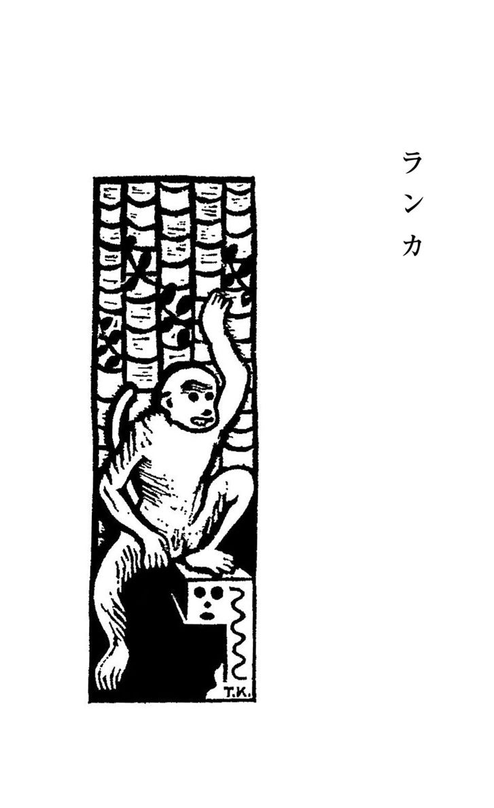
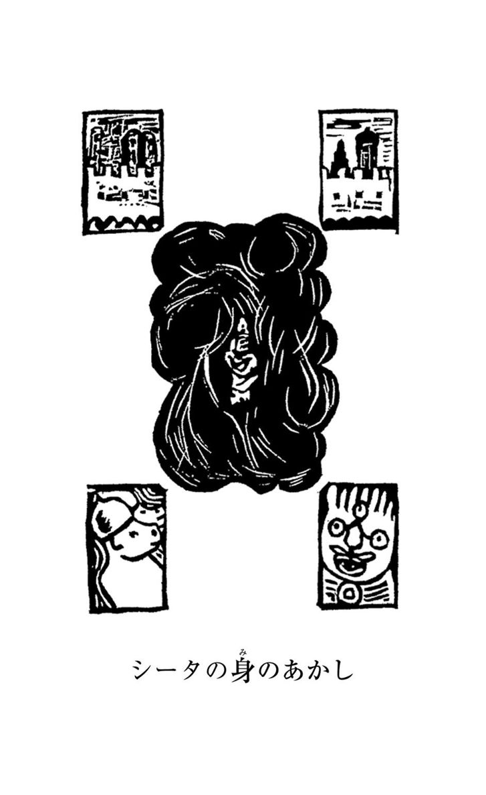
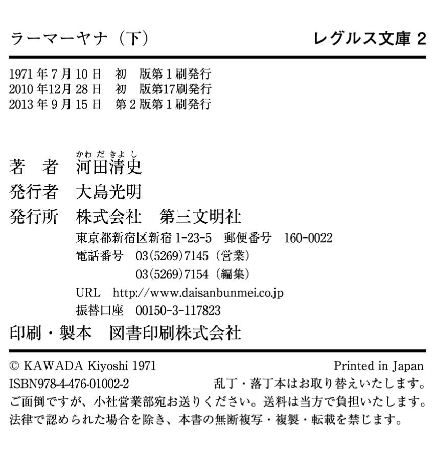

| ラーマーヤナ（下） | |
| 河田清史 | |
| (2013) | |
ラーマーヤナ（下）
インド古典物語
河田清史
レグルス文庫2
この電子書籍は、縦組みの底本を元に作成しました。

ハニュマーンはやっとぶじにランカへ到着することができたと思うと、よろこびいさんで、悪魔の都をさっそくしらべにかかりました。ながい城壁のもとには、やしの葉が空高くそびえ、日没の陽の光に赤あかとかがやき、枝は、はとのしっぽのようにひろがって、こんもりした森になっていました。
そのうえに、ランカの城壁がえんえんとつらなり、小塔や塔が紫いろの空をつんざいていました。塔と塔とのあいだには、武装した悪魔の歩哨のすがたが、ちらほらみえます。
このようすをみて、ハニュマーンの心はおじけづきました。
「空にそびえたつこの高い城壁をこえて、とおいシータのところまで、いったいどうしたらいくことができよう」
ハニュマーンは運よくものかげに立っていたので、番兵にはみつかりません。番兵は、はるか高いところから、とおくのほうをみわたしていました。熱帯のみじかいたそがれがくれると、世界中は夜のしずけさにしずみました。
ハニュマーンはひどく疲れていたので、海のどうどうとうちよせる逆まく波の音も耳にはいらず、夜どおしぐっすり眠ってしまいました。
朝になって目がさめてみると、まっ赤なまりのような太陽が大海原からのぼりかけていて、空へうつくしい後光を投げています。大空は赤くかがやきはじめましたが、ハニュマーンは、けさの日の出をすこしもうつくしいとは思いませんでした。
なにしろ、お腹がぺこぺこで、まるでなん千頭という、うえた狼が、お腹のなかでほえているような気がしたのです。
「たべものはないか。たべものだ。たべものだ」
ハニュマーンは思わずひとりごとをいいました。やしの木をふとみあげると、あ、そこにいいものがありました！ しめた、とばかり、ひらりととびあがって、木のてっぺんへのぼり、やしの実をもぎとると、ふたつにわって、なかの身をがつがつ食べました。
──やがて三十分もたつと、ラーバナの都は目がさめたのか、歩哨がハニュマーンをみつけていろいろの槍をつぎつぎと投げてきました。ハニュマーンは、ひらりひらりと身をかわし、するどい槍のほこ先をさけました。
歩哨はたいそうおこって、矢だの、円盤やつちほこなどといった武器を、つぎつぎと投げてきます。ハニュマーンは、それでもけろりとして、あちこちにとびうつり、ピクニックにでかけたときのようにやしの実を食べていました。そのうちに、蛇の口といわれるもりを投げてきました。ハニュマーンはぐんととびあがると、もりはぴゅーと足もとをかすめました。このとき、ちらりとランカの城壁のなかをのぞいてみると、くだものの王といわれるマンゴーの林がみえるではありませんか！ 熟したマンゴーが枝もまがるほど、いっぱいなっているのです。
ハニュマーンはなにもかもうち忘れて、夢中になってランカの城壁をひゅーと、とびこえました。このとき、人の目にはみえない星が、空から落ちかけてきたのですが、ハニュマーンはそれをしっぽではらいのけました。大きな天体はインドとランカのあいだに落ちて、海のまんなかに小島となりました。しかし、ハニュマーンは星が落ちたことや、落ちたとき海がふっとうし、お湯のように泡だったことに目もくれません。たちまち森のまんなかにとびおりて、悪魔の番兵の目からすっかりかくれてしまいました。そこにすわりこんで、赤く、黄いろく、紫いろに熟したおいしいくだもので朝のごはんをすませました。
ハニュマーンは森のくだものを片っぱしから食べてしまったのです。一時間のあいだに、ランカのマンゴーの半分がハニュマーンのお腹のなかにはいってしまいました。やがて悪魔の園丁どもがそれをみつけて、木から木へハニュマーンを追いかけまわしました。
さて、ひもじさがなおると、ハニュマーンは園丁たちとかくれんぼをしにランカへきたのではなく、シータを探しにきたのだと、やっと思いだしました。そこで、悪魔どもをからかうのをやめて、さっととびあがり、すがたをかくしました。
「いったい、シータはどこにいるのだろう？」
ハニュマーンは午前中くりかえしつぶやきながら、宮殿や洞穴や、楽園などを、すみからすみまで探しましたが、シータのすがたはどこにもみえません。
午後になると、屋根のうえにランカの貴婦人たちが日なたぼっこをしにあらわれましたが、そこにもラーマのお妃に、にたような人はひとりもみあたりません。
「シータはどこなのだろう？ どうしたら探しだすことができるだろう」
ハニュマーンはどうしてよいかわからず、ひとりごとばかりいっていましたが、日が暮れたので、すべて思いきり、王宮のなかでいちばんけわしい塔のうえで、今夜は寝ようと決心しました。そこには歩哨がひとりもいなかったからです。いろいろ心はいたみましたが、こどものようにぐっすり寝こんでしまいました。
翌日、目をさましてみると、ランカの夜あけのすがすがしい光景は、それこそ目がさめるばかりのうつくしさです。
ラーバナのいる御殿はどこもここも黄金いろにかがやき、そのまわりには水晶でつくった泉水があって、青あおとした泉水はつぐみの鳴きごえのようなうつくしい音をたててほとばしっています。宮廷の金の広間では、いまもなお天国の衣をつけた神がみが、そうじをしたり、柱や床をみがいて働いていました。
ラーバナの宮殿からとおく目をはなつと、そこに皇太子のインドラジットの紫水晶の御殿がありました。象牙の壁がこうぎょくや縞めのうでうつくしくかざられています。どこをみても、あまりのうつくしさに、ぼーっとなってしまいました。
人であろうと、猿であろうと、ランカのこのようなありさまはせいぜい夢のなかででもなければみることはできないにちがいないでしょう。しかし、こうしたうつくしさにうっとりとなっていても、ハニュマーンはひもじい思いをどうすることもできません。
かれはまたもお腹がすいて、ちょっとのあいだに、森のマンゴーののこりを、むしゃむしゃ食べてしまいました。
風の神パバナが猿にうまれかわって、ハニュマーンとなったのですから、まだまだ神の力がいくらかのこっていたのでしょう。ハニュマーンは自分のからだを、りすのように小さくすることも、また山のように大きくすることも思いのままでした。
マンゴーの森でごちそうを食べながら、──いままでかかってシータをうまく探しだせなかったのだから、こんどはひとつ、できるだけ人目にたたないように、こっそりと探そう、と決心しました。
そこで、ほんの小さな猿の大きさにちぢんでしまいました。
あちらこちらのこんもりした木のしげみにかくれ、ようすをみたり、きいたりしました。夜になると、宮殿の窓へ怪蛇のようにこっそりはいよって、悪魔どもがしゃべっていることに耳をかたむけ、昼間は王宮の入口ちかくの木のかげにかくれて、そこのうわさ話をこっそりきいたりしました。
あちらこちら探しましたが、シータの消息はどうしてもわかりません。どこの宮殿にもいないのです。ひょっとしたら、牢屋のなかにいるのではないかと思い、ねずみのように小さくなってほうぼうかけずりまわりましたが、シータはみつかりません。こうしてみると、シータはもう死んでしまったのではないか、という考えがうかびました。
さまざまな疑いが、ハニュマーンの心をさわがせました。
「シータがいうことをきかないというので、ラーバナは殺してしまったのではないか？」
ハニュマーンは自分で自分の心にたずねました。
「しまった、しまった。もっとはやく、ランカへくればよかったんだ」
かれは、しくしく泣きだしました。
「もしシータが死んでいるとしたら、それならそれで、たしかな証拠をつかまなくてはならない」
こう考えて、しずんでいた気持ちをふるいたたせているうちに、はっきりした考えもわいてきました。
「シータが生きているとしたら、その居どころをしっているものは、まずラーバナのほかにはあるまい」
ハニュマーンはさらに考えつづけました。
「そうだとすると、ここしばらくのあいだ、ラーバナのでかけるときには、夜昼あとをつけてみよう。うまくいけば、シータをみつけることができるわけだ」
ハニュマーンも猿の例にもれず、あれやこれやと思いまようのでした。しかし、猿は人間よりもずっと、すばしっこくうごくことができます。ハニュマーンは二日二晩、たべものもとらず眠りもしないで、ラーバナのあとをつけまわしました。その困難にたえたかいがあって、やっとのことで、シータのすがたをみつけることができたのです。
三日目のこと、ハニュマーンはランカの森にでかけるラーバナのあとをつけました。
ラーバナは黄金の馬車にのって、緑いろにかがやく森のなかへ、するするとはいっていきます。
悪魔の馬車は風よりもはやくはしれるので、ハニュマーンは馬車におくれまいとして、大いそぎで木から木へ、塔から塔へと、とんでいきました。
ラーバナは、たったひとりで、番兵もつれずにいたので、ハニュマーンは魔法をつかわなくても、すこしも気づかれません。ラーバナの目はじっとたづなにそそいでいたので、あとをつけられているとはしりません。
まもなくアソカの森のまんなかについてみると、そこにお化けのような顔をした悪魔の女どもが、とらわれたシータのみはりをしていました。
ラーバナは馬を木につないでから、おそろしい顔をした番兵のあいだをとおりぬけ、シータのまえにでました。ハニュマーンはアソカの森の木のてっぺんによじのぼって、やっとそこからシータをみることができたのです。
「まるで天からおりたお月さまのようだ」
シータのうつくしさに、ハニュマーンはわれを忘れてつぶやきました。シータは青ざめて、それこそかわいそうなくらいまっ青でしたが、清らかな顔は、あくまでうつくしくすんでいました。
シータをひとめみただけで、ハニュマーンは神さまのまえにいるような気がしたのです。目はくらみましたが、ほんとうのことをききとろうと、耳をじっとすましました。魔王ラーバナはシータにむかって、十の口からいっせいに話しかけたのです。
「シータ、いつまでもいうことをきかぬと、あしたこそ、おまえの眼玉をえぐりとってやるぞ！」
こういって、ラーバナはシータの返答をちょっとまちましたが、また、つづけていいました。
「おまえの顔を、ふためとみられぬみにくい顔にしてやろう。その顔でラーマのところへかえるがよい。めくらの、みるもおそろしい顔になったら、いくらラーマでもふりむいてもくれまい。悪いことはいわん！ ラーマをすてて、わしの国の人間になりなさい」
「はい、おおせにしたがいますが、それにはたったひとつ条件がございます」
シータはおだやかにいいました。
ハニュマーンはこのことばをきくと、ぎくっと胸を槍でさされるような思いがしました。あっ、とこえをたてそうになりましたが、やっとのことでのみこみました。耳をとぎすませて、シータがこれからなんというか、じっときいていました。
「その条件は、もしあなたがラーマでありましたら、ということでございます。わたくしはただラーマひとりだけしか、うやまうことも愛することもできません。わたくしの心も、魂も、すべてラーマのものです。
わたくしの血のなかにも、心にも、魂にもラーマの血がながれております。いまも心のなかにあるラーマをうやまい、愛しているのです。それゆえ、あなたがラーマでありましたら、わたくしはおおせにしたがうでございましょう」
ラーバナは怒りにもえてどなりちらしました。十の口からいっせいに雷鳴が十倍になったような大きなこえで、がんがんいいました。
「おれは魔法使いだ。ラーマのすがたにかわることも、わけなくできるが、そんな術は、つかいたくもない。どうだ、ラーバナの妃にならぬか。さもないと......」
「いいえ、いけません。たとえ幼いこどもが太陽をつかみとったとしても、きちがいが海の水という水をみんなコップにあけることができたとしても、また、たとえ兎が一撃でライオンをうち殺したとしても、けっしてシータは悪魔の国の人間になどなりません。どうか、あっちへいってください。このうえ、わたくしをかまわないでください。ああ、ラーマ、あなたはどこにいらっしゃる！」
シータは泣き叫びながら、ラーマの名をよびつづけるのでした。
このシータの心からの叫びごえをきくと、ハニュマーンはその痛快さに、胸がすうっとして、おどりあがらんばかりによろこびました。
「ああ、やっとシータを探しだすことができた。これでどうやら、ランカへはるばるやってきたかいがあるというものだ」
と、ハニュマーンはわくわくする心をおさえて、つぶやきました。
ラーバナは家来どもに、なにか命令をのこして、恥と怒りにもえながら、馬車にさっとのると、かえってしまいました。
やがて正午になると、シータの見張人はみんな昼ごはんを食べ、それから昼寝をするためにでていきました。この昼寝は南の国にすむ人びとの習慣ですが、また悪魔どもの習慣でもあったのです。
すると、そこへひとりのうつくしい婦人が、木のまがくれの道をしずしずととおってきました。みると、金のお盆にたべものをのせて、シータのところへいきました。シータにむかって、たいそうていねいにあいさつするのです。
「さあ、めしあがらないといけません。このままでは死んでしまいます。あなたの消息がラーマさまにとどかないうちに、飢えてお亡くなりになどなってはなりません」
「サラマさんですか。ほんとうにおそれいります。あなたのご親切がなかったら、わたくしは、とうに死んでいたことでございましょう」
「おあがりなさい。やしの実のはいったカレーライスです。パンをすこしあがりませんか。これはルードウといって、チーズとはたんきょうでつくったお菓子です。さあ、めしあがれ。どうぞめしあがってくださいませ」
サラマはこういって、なだめたり、あやしたりしてシータにすすめました。サラマは、まことにみあげたりっぱな婦人でした。それもそのはず、ラーバナの弟で、正しい人である、あのビビシャナの妻だったからです。
けれどもシータは、ほんのちょっと手をつけただけでした。ハニュマーンは木のうえから、このありさまをみてびっくりしました。
「あれっぽっちしか食べられないのか。あれでは、とてもながくは生きていられまい」
まもなく、サラマの侍女がやってきて、宮殿へよびもどしにきました。サラマは自分でもってきたお盆を、侍女にもたせるようなことはしないで、また自分でもってかえりました。シータをふかく尊敬していたからです。
ハニュマーンはあたりをみすまして、とまり木からするするとおりてくると、シータのまえに頭をひくくさげました。
「およろこびくださいまし、シータ」
人が神にむかうときのように、うやうやしくいいました。
「ラーマからのおことづけをもってまいりました」
「あなたは、どなたです？」
シータはいきなりあらわれた猿をみて、びっくりして叫びました。
「ラーマのことづけなどといって、また悪魔がすがたをかえて、わたくしを苦しめにきたんですね」
「シーッ」
猿はおしとどめてから、こごえでいいました。
「わたくしはすがたをかえた悪魔ではございません。びっくりなさらないでくださいまし。どうか、わたくしをお信じになってください」
「あなたは悪魔の仲間ではないというんですね」
シータはひそひそといいました。
「ラーマのことづけを、ほんとうにもってきてくださったかどうか、どうしてわかりましょう」
「ごらんください。りっぱな証拠がございます。ラーマの指輪をこのとおり指にはめてまいりました。お妃さま、わたくしはあなたの息子で、ラーマの家来でございます。この指輪はラーマのではないとおっしゃるのですか？」
シータは指輪を手にとり、指にはめました。ぴったり指にはまると、シータは目から、はらはらと涙をながし、なにもかもみえなくなってしまいました。
「ラーマ、ラーマ、ラーマ」
やっと、これだけしかいうことができません。ハニュマーンはゆうかんな猿でしたが、シータの悲しみなげくようすに、つい泣いてしまいました。
そのうちに、シータのみはりをしていた悪魔どもが目をさましたのか、大きなあくびをするのがきこえました。ハニュマーンはすばやく、さっと木のうえにすがたをかくしました。もうアソカの森をみつけたのですから、ここに数日とどまって、シータから、ことの次第をよくきこうと心にきめました。
毎日、おなじ時間になると、ラーバナは黄金の馬車にのってやってきました。そうして毎日のように、ラーマのことを忘れ、わしの国の人間になれといって、シータのごきげんをとりました。
シータはめったに返事をしませんでしたが、ラーバナは神がみよりも自分のほうがつよいなどとじまんして、シータをいらいらさせるようなときには、いつもシータはおそれることなく、どうどうと、こういうのでした。
「ラーマは、なんといっても正義の人です。ラーマの肩は山のようにどっしりとしていて、腕は千頭の虎の足よりも、つよいでしょう。あなたにであったら、ラーマはきっとうちたおして切りさいてしまいます。
ラーマの腕は雷の爪のようにつよいから、いくらたくさんの悪魔でも、ひっとらえて殺してしまうでしょう。あっちへさっさといきなさい。この十の頭のけだものめ！」
「じょうだんじゃない。このラーバナさまをほろぼす武器は、大神がみんなおかくしになっているのだ」
ラーバナは、またもじまんしはじめるのでした。
けれども、シータはそれをさえぎっていいました。
「神さまも悪魔もどちらも、あなたをうちたおす力がないとしても、ラーマだけは武器がなくても手ひとつで、あなたのわるい罪な生活をほろぼしてしまいます。あっちへいきなさい！」
神がみをないがしろにしていたラーバナも、このように、ひとりのか弱いシータからは、毎日いつも追いはらわれるのでした。
みはりの悪魔どもが眠っていたり、警戒をゆるめたりしているときには、ハニュマーンはいつもすきをうかがって、かくれているとまり木からおりてきて、シータの話をききました。
シータはこういうのでした。
「わたくしがいちばん悪いのです。あの日、ラクシマナにラーマを助けにいくように、わたくしがせがまなかったら、こんなことにはならなかったでしょう。
──ラクシマナは、ただわたくしのたのんだとおりのことをしてくれたのです、とラーマにちゃんとつたえてください。ラクシマナをほめこそすれ、非難などしてはならないのです。りっぱに義務をはたしてくれたのですもの。
わたくしのたのみをきいて、わたくしひとりをのこしていくときでさえも、ラクシマナはこの世の敵や、また天国の敵がだれひとりわたくしにちかよることができないように、おまじないの線をひいていってくれました。そんなにまでして、全力をつくしてわたくしをまもってくれたのです。
けれども、魔王のラーバナは、あの日はいつになく魔法にたけていました。ラーバナは隠者にすがたをかえ、あのおまじないの線のふちまでやってきました。たぶんすぐそばの木のかげにかくれていたのでしょう。なにかくれないか、といいながら、ちかづいてきました。
──わしはジャングルで道にまよった聖者です。足は疲れ、ひどくひもじくて、喉はからからにかわきました。たべものと、飲みものをおめぐみください。
そこでわたくしは、ラクシマナがひいてくれたおまじないの輪のそとにでることは、けっしてできないと、もうしますと、聖者はまたこういいました。
──あなたがどなただか、わたくしはよく存じています。ラーマやラクシマナがもどってきて、あなたが聖者にたべものと飲みものをめぐまなかったとしったら、ふたりはどんなになげくことでしょう。
昔の神の書にもかいてあるとおり、だれであろうと飢えて喉がかわいているものを、親切に世話しなかったとしたら、それこそ一族は、恥ずかしい目にあい、またそのことで、先祖は天国から地獄へおとされてしまうのじゃ。あなたのご主人や一族たちが、そんなひどい目にあってもよろしいのじゃな！
聖者はわたくしをじろじろみながら、手をあげ呪文をかけるようなしぐさをして叫びました。
──米と水とをこのおまじないのふちまでもってこい！ さもないとわしはおまえの一族におそろしいのろいをかけますぞ。
さまざまのおそろしい光景が、わたくしの心のなかをかすめました。わたくしはなにもかもわからなくなり、分別もなくなって、いそいでお米をせともののお皿にかきあつめ、はしってまえへでました。
ひと足ごとに、なんだか足が地面へくっついて、まるで大地の女神ダリトリがわたくしをつかまえて、あとへもどすように思われました。けれども、わたくしはおまじないをかけようとしている、聖者のいやらしい手のかっこうだけしか目にはいりません。
聖者はおまじないの線のそばに立って、わたくしをじっとみていましたが、そのとき、ふいにおそろしい呪文をとなえはじめました。わたくしはおそろしさのあまり、その線からふみだして、お米をもった皿をさしだしました。
すると、どうでしょう。聖者は手をおろしたと思うと、たちまち十の頭のある魔王のすがたになって、二十本の腕でわたくしをぐるぐるまいてしまいました。わたくしは大ごえをたて、力いっぱいたたかいましたが、もうどうすることもできませんでした」
シータはこのときのことを思いだして、わっと泣きくずれました。人間のすがたが急に悪魔にかわり、二十の腕でいきなりつかまれたときのおそろしさを、シータのほかに、いったいだれがしっているでしょう！
涙がかわくと、シータはまた話をつづけました。
「魔王は、すばやく空へわたくしをひきさらって、天かける馬車にのせ、なん本もの手でわたくしをおさえつけながら、のこった手でたづなをにぎり、ランカへむかいました。とらえられたことを、なんとかしてラーマにしらせようと、身につけたかざりや肩掛けなどを投げすてました。ラーマがそれをひろえば、ランカへの道しるべになる、と思ったからです」
そこで、ハニュマーンはそれらのものが落ちていたことや、あの勇敢な鳥のジャターユゥの死などを話しました。それからキシキンダーの猿の軍勢が、ラーマに加勢していることや、シータもまもなくとらわれの身から救われるだろうといって、いろいろとなぐさめました。助かるのぞみをすっかり失っていたシータは、いままた希望にもえたちました。
「ラーマはいまどんなふうに暮らしていますか。どなたがラーマのめんどうをみてくださるのです？」
シータは、なおもたずねました。
「ラーマやラクシマナの食事の世話を、どなたがみていますか？ おや、お猿さんがおふたりをまもっていてくださるのですね」
数日のあいだ、ハニュマーンはシータにしたしくあって話をきいたのですが、このままぐずぐずしていれば、それだけシータの命がちぢまるのだということに、はっと気がつきました。悪魔どもがいまにもシータをめくらにしようとしたり、耳をそぎ、顔やからだを傷つけようとしたことを、シータは毎朝話すのでした。
みはりの化けものどもは、シータのすぐそばで、いろいろなのろいを大ごえで叫ぶのです。そのあとで、悪魔どもはみるもおそろしいお面をかぶって、髪の毛をさかだて、ものすごい踊りをするのでした。
それがすむと、ラーバナがやってきて、自分がどんなにえらいかということをじまんしました。ときにはうそをついて、ラーマやラクシマナは殺され、悪魔どもの餌食となってしまったなどといいました。
シータは岩のようにしっかりこらえにこらえ、毎日まいにちくりかえされるいろいろの道化にふりむきもしないで、じっと座っておりました。ある日の午後、みはりの悪魔どもが昼寝をしているとき、ハニュマーンはこっそりシータにたずねました。
「お妃さま、よくこんな化けものをがまんしていられますね」
「わたくしはほとんど、みもききもいたしません。わたくしにはよくわかっておりますの。もしもみたりきいたりしたら、きっとわたくしは死んでしまったでしょう。それで、悪魔どものすることなすことは、いいことでも悪いことでも、いっさい、みもせずききもしません。気にもとめないのです。わたくしは、そんなときひとりで祈っているのです。
──ラーマ、ラーマ、ラーマ
ラーマの名をとなえていると、わたくしは魔法にかけられたようになって、悪魔どものいいかげんな魔法は、ちっともかからないのです。わたくしを殺すなどとおどかしても、ラーマからはなれてしまったいまとなっては、なんでもありません。
めくらにするとおどかされても、もうすでにめくらも同然ですから、すこしもこわいと思いません。どんな物音がしても、ラーマの足音をきくことはできないのですから、すこしもびっくりしません。ちょうど雲が、たかやあおさぎがいくらさわいでも、じっとしずかにしているようなものです。
ラーマ、ラーマ、ラーマ、わたくしはラーマをじぶんの心のなかに探しております。もうどんなことも気にかかりません」
「わたくしがかえりましたら、なにもかもラーマにお話しいたしましょう」
と、ハニュマーンは叫びました。
「はやくラーマのところへいってください」
シータはつづけていいました。
「わたくしの消息をじりじりまっていることでしょう。いまのわたくしには、味方がぜんぜんないわけではないとつたえてください。ラーバナにビビシャナというひとりの弟がありますが、このかたは心の正しい清らかな人です。
わたくしの世話をなにかとみてくれるのが、このかたの奥さんのサラマさんです。サラマさんとわたくしはいっしょに座って、ときどきラーマやラクシマナのためにお祈りすることもあります、と、なにもかもありのままをラーマに話してください」
「そのほかに、まだラーマにおつたえすることはございませんか」
ハニュマーンはかさねてたずねました。
「あなたがみたとおりのことをつたえてください。ラクシマナには、わたくしがあのときいったひどいことばをどうか許してくれるように、いくえにもおわびしてください」
「はい、承知いたしました」
ハニュマーンはこういってうなると、たちまちもとの大猿のすがたにかえりました。
「わたくしが猿の大群をひきつれてむかったら、ランカなどあしの原のようにわけなくつぶれてしまいますよ。ラーバナはほろびてしまうでしょう。そうしたら、天かける馬車にのって、ラーマといっしょにアヨージャへおかえりなさいませ。それまでは、ごきげんよう、お大切に」
ハニュマーンはシータの足もとから立ちあがって、ランカの城壁のそとへさっととびこえ、そこからインド洋をわたろうと、足をかがめて身がまえました。
ところがいっぽう、シータをみはっていた悪魔どもは、猿のうなりごえをききつけておきあがりました。昼寝からさっと目がさめると、さっそく警戒にとりかかり、すがたをかくした悪魔の歩哨は、それとばかりあつまって、魔法の呪文をとなえながら、魔法のわなをかけ、ランカの黄金いろの城壁をくまなくみはりはじめたのです。悪魔どもは、ハニュマーンのすがたをみつけると、歯をとぎはじめました。猿の肉を今夜のごちそうにしようと相談したのでした。
ハニュマーンはちょうど海へむかって、空へとびあがろうとしているところでした。そこへ、魔法のあみを投げられ、つかまってしまったのです。顔はインドのほうへむいていたのですが、からだはぐんぐんとランカのほうへひきもどされます。
あみがつぎからつぎへかかってきて、あみの目のなかにおちてしまい、万力でおさえつけられているような気がしました。
ハニュマーンが目をぼんやりひらいて、あたりをみまわすと、悪魔は列をなしてよろこびはしゃぎながら、踊っているではありませんか。そうぞうしい叫びごえをよくきいてみると、こういってどなっているのです。
「お猿の肉はうまいぞ。ひとつ、あぶって喰おうじゃないか」
悪魔どもはハニュマーンのしっぽをつかんで、ひきずりまわしました。
「さて、困った、どうしたものだろう。おれはラーマからふかく信任されている。おまけにシータの運命も、われわれ猿の名誉も、すべておれがインドにかえれるか、どうかにかかっているのだ。どうしてもかえり着かなくてはならない。ああ、ラーマ、力をおさずけになってください！ ああ、ラーマ、知恵をかしてください」
ハニュマーンは心のなかでじっと祈りました。
けれども、ラーマにたよらず、やはり自分でなんとかしなければなりませんでした。もえ焦げていくいたさに、からだじゅうが突きさされるような気がしました。
──悪魔どもはついにハニュマーンのしっぽに火をつけたのです。
悪魔どもはいっせいにはやしたてました。
「お猿の肉はうまいぞ。ちろちろ、ちろちろ焦がそうじゃないか。ゆっくり、こんがり焼いたお猿の肉は、この世のいちばんのごちそうだ。もみがらの火で肉をあぶるように、お猿をゆっくり、こんがり焼こうじゃないか」
「おお、いたい、いたい」
身うごきできないハニュマーンはうなりました。このとき、ひょいとある考えが頭にうかんだのです。すばしっこくうごくのは猿の得意です。
──あっと思うまに、ねずみのように小さくなると、あみの大きな目のひとつからくぐりぬけて、はいだしました。悪魔どもは人ごみのなかにとびこんだハニュマーンを追いかけましたが、ハニュマーンはしっぽにふれるものはこれさいわいと、なんにでもかまわず火をつけて、一目さんに逃げだしました。
たちまちハニュマーンのすがたはみえなくなりましたが、ほし草や森の木の葉から火の手があがりました。煙がもくもくわいて、逃げていく猿のすがたをかくしてしまいました。追手からとおくはなれてしまうと、またもとの大猿になりました。
ハニュマーンはしっぽを火の車のようにふりまわし、穀倉に火をつけ、家いえにも火をつけだしました。家から家へ、穀倉から穀倉へ、庭や洞穴や宮殿にまで火をつけたので、ランカの半分がほんとうに火の海となってもえあがりました。
こうして、アソカの森のちかくへきて、しっぽで火をつけようとしたとたん、はっとしてシータのことに気がつきました。そこで、しっぽの火を松明のように高くかざして、シータのまえにあらわれました。
さっそくかいつまんで、あれからなにごとがおきたかをシータに話しました。シータは、もうこれ以上害をくわえないように、とハニュマーンにいいつけました。
「ハニュマーン、いま悪魔どもは火を消すのに夢中になっています。このすきに、はやく空へとびあがって、ラーマのところへいってください。はやく、海をこえてとんでいきなさい」
「はい、わかりました。なにか証拠になるようなものをくださいませんか。あぶない目にあったので、ものごとに考えぶかくなりました。わたくしがこの目でほんとうにあなたにお目にかかった証拠をしめせ、とラーマはおっしゃるかもわかりません。どうかラーマにおみせするものをなにかください」
と、ハニュマーンはいいました。
シータは結婚のときの指輪をぬいて、ハニュマーンにわたしました。ハニュマーンはこのとき、頰を風船のようにふくらましてしっぽをぷっと吹いたのです。たちまち火は消えましたが、まあ、どうしたことでしょう。
ハニュマーンは猿だったので知恵がたりなかったのでしょうか。顔をあんまり火のそばにくっつけたので、顔に火がついて、すっかりまっ黒けになってしまいました。
──インドの森には、今日でもハニュマーンの血筋をうけた猿の子孫がおりますが、この子孫は、まっ黒い顔をしためずらしい猿で、ハニュマーン猿といわれています。先祖のハニュマーンがもえているしっぽから、顔をとおくはなしていたら、いまの子孫は黒い顔にならずにすんだにちがいありません。
しかし、これをひどい目にあったとは考えず、ラーマにおつかえした証拠だと思っているので、黒い顔の子孫は自分たちの気高さのしるしなのだ、といばっています。それで、ほかの猿は黒い顔の猿を内心うらやましく思っているということです。
ハニュマーンが、しっぽから顔をはなして、ふたたびシータのほうにふりむくと、シータはあっと叫びました。
「ハニュマーン、いったい、どうしたというのです。まあ、お顔がまっ黒です！」
「お妃さま、ご心配くださいますな。あなたやラーマに心から忠誠をつくしている証拠です。ごきげんよう、それではごぶじでまっていてください。
指輪はあごのこぶのなかにいれておきますが、けっして食べてしまうようなことはいたしません。さようなら」
ハニュマーンは指輪を口にいれると、すぐさま、ランカの城壁へとびあがりました。もう、いまはだれもみてるものはありません。悪魔どもはみんなして、あちらこちらの火を消すのにいっしょうけんめいでした。
足をかがめると──みるまに天のまうえめがけて、矢のように空高くとびあがりました。夕暮れのくもった海のうえにさしかかると、ランカはハニュマーンの眼下で黒い煙をもくもく吹きあげていました。
高い空のうえは、急に寒くなりました。ハニュマーンは北の空の星が、墨をながしたような夜空のなかを、矢のようにとんでいるのをみながら、インドのほうへ突進しました。
夜どおし星はつぎつぎとのぼってきて、ハニュマーンの道しるべとなりました。最後に月ものぼりました。月はラーマにつかえててがらをたてようと、銀いろの道をてらし、ハニュマーンをインドのいちばん南端のコモリン岬へみちびきました。
月が役目をはたすと、こんどは太陽がのぼりました。太陽は黄金の虎のように、東の丘からおどりあがって、ハニュマーンの疲れた目に、インドの浜辺をみせてくれました。浜辺にはなん千という猿があちらこちらに点てんとして、朝の礼拝を行なっています。ハニュマーンは大ごえでよびかけました。猿の群はそのこえをききつけて、ハニュマーンだとわかりましたが、顔はいったいどうしたというのでしょう？
猿たちは口ぐちに叫びました。
「ハニュマーン、ハニュマーン！」
ハニュマーンはさっと地上にとびおりました。
「ようこそ、おかえりなさい、おかえりなさい」
猿たちは、おりたったハニュマーンの疲れてくるしそうなようすを目のまえにみると、みんな大ごえで叫びました。しかし、疲れたなかにも、ハニュマーンの心はほっとして、目は勝利にかがやいていました。
このあいだに、雨の季節はいよいよたけなわになりました。神がみがいやいやながら、常春の国にしたランカをのぞいては、世界中、どこもかしこも嵐と風と雨にとざされていました。
ラーマとラクシマナは悪魔の国からとおくはなれたキシキンダーのちかくで、あらゆるたのしみを断って、黙想や講話に日をおくっていました。
人いちばい生まじめなラーマは、ラクシマナにいいました。
「わたくしたちは雨にとじこめられているあいだに、すっかり身をきよめておかなくてはならない。
ラクシマナよ。大空から降るあの銀いろのめぐみの雨の音に耳をかたむけなさい。目をあげてごらん。
空はいくえにもかさなった雲でつつまれている。雷がその雲のうえを鉛の鞭でたたいているのだろう。空はいたさにたえかねてうなるのだが、青あおとかがやく空のまうえまではとどかないのだ。
むこうの地平線をみるがよい──白鳥がその友をひきつれて、ヒマラヤの湖へと家路をさしてとんでいく。雨がしばし降りやんだいま、野のくじゃくはこえ高く鳴き、滝の音は豪壮なひびきをたてている。
つるはみどりの丘の木のうえで、まっ白い帆のように翼をいっぱいひろげている。雨でよみがえった草に、点てんと光る宝石のような花をみるがよい。
ラクシマナよ、鳥はつめたい雨のしずくにぬれているが、こえ高く歌をうたっているではないか。
とおいかなたの雷のつぶやきも、いまはせみのひびきわたるうなりや、かえるのいきいきした鳴きごえに消されてしまっているではないか。
ああ、また雨が降ってくる。雲は天の高い砦までもおそうことだろう。東、西、南、北、四方八方ことごとく、雨の絃をかきならすハープのようだ。
いまこそ、まさに雨の季節なのだ。わたくしの心はおもく、悲しみの底にしずんでしまいはしないかとおそろしい。
ふたりの悲しみは、おそろしい運命を背おっているためなのだ。さあ、黙想をつづけ、おそれおののく思いと、ものうい魂とを、ともどもにきよめよう」
ふたりはこうして、雨の降りつづけるながい季節をすごしたのでした。
どしゃ降りの雨が六週間もつづいたある夜のこと、ラーマとラクシマナは、なおもおきていて、神に祈りをささげていました。
するとそのとき、目のまえの雲に、銀いろのすきがざくりと突きささるのをみました。すきは嵐の空に、ふかく突きささり、底のそこまでわけいって、青空を高くのぞかせました。
「兄さん、ごらんなさい。月がのぼるところです」
ラクシマナはいきなり叫びました。
「雨の季節がおわったんですね！」
ラーマは東、西、南、北、と四方をじっとながめながら、すがすがしい空気をふかくすいこみました。大地のにおい、雨にうるおった土のゆたかさ、とおく清すめる大空、もうまもなく平和なみのりの多い時節になるのだ、とふたりの王子はよろこびました。
夜あけの鳥がしずかな鳴きごえで、いかにもうれしそうにさえずっていました。
するととおくのほうで、巨人が大きな弓の弦をひいているような、大きなひびきがきこえてきました。物音はだんだんこちらへちかづいてきて、たかが羽ばたいて、ぱたぱたおりてくるようにきこえます。
暁の光がぼんやり明るくなると、ハニュマーンが翼のはえた山のようなかっこうをして、空からおりてきました。たかよりも身軽に、ラーマの足もとにひょいとあらわれました。
猿のなかでもいちばん才能のゆたかなハニュマーンは、はらはらするような数かずの冒険を、おしまいまで語ってから、シータがよこした指輪をラーマにみせました。指輪をちらりとみただけで、ラーマは雷にうたれたようにおどろき、涙をはらはらとながすのでした。
「シータ、シータよ。いつまた、あえるのだろうか？ シータがいなくて、どうしてわたくしは生きていられよう。悪魔の拷問をじっとがまんしていておくれ。きっとこの指輪をあなたの指にはめにいきます。
月の光にかがやく大空のように清らかでけがれなく、ヒマラヤ山の峰のようにつよくそびえたって、ぼくが助けにいくまで、どうかまっていてください」
ラーマはこういいながら、ハニュマーンのほうにむきなおりました。
「ハニュマーン、お礼になにをさしあげよう」
「な、なにをおっしゃるのです。ただあなたのお役に立てばよいのです。どうかなんでもおっしゃってください」
ハニュマーンは涙で息がつまりながらこたえました。
「あなたをみているだけで、わたくしの心はなごやかになるのです。あなたは人間のなかの王者です。シータは女のなかの光です。わたくしは生きているかぎり、あなたがたおふたりにおつかえしたいのでございます」
「ありがとう。おまえの友情がなくては、わたくしも生きてはいられない。しかし、なにかほしいものがあるなら、えんりょなくいってくれまいか」
ハニュマーンはなにがよかろうか、と考えているようすでしたが、そばの池にうつっている自分の顔をふとみると、びっくりしました。顔は炭のようにまっ黒けなのです。
そこでラーマに話しかけました。
「あなたは神通力をもっていらっしゃるということです。あなたがお許しくださることは、いくら年月がたっても、そのままで消えることがございますまい。どうか、このことをお許しください。
わたくしの子々孫々だけは、いまのわたくしの顔のように、ほかの猿とはちがって、黒い顔をしてみんな生まれてくるようにしてください。わたくしがやっとえたこの特徴を、子孫にながくのこしたいと思います。
あなたにおつかえすることよりほか、この世に気高いつとめはありません。おつかえしたからこそ、顔がまっ黒になったのでございます。どうか、この名誉の黒い顔は子々孫々につたわる、とおっしゃってください」
ラーマはしばらく考えこんでいました。ハニュマーンの目にふかい決心のいろをみてとると、ラーマはいいました。
「ああ、よろしいとも」
ラーマがこういいはなったので、そのときからきょうまで、インドのジャングルの猿の群のなかに、黒い顔をした猿がみうけられるのです。この猿たちは猿のなかの貴族です。一族はみなハニュマーンとよばれ、木のうえにすむもののうちで、もっとも位の高いという意味で、シャカチャラともいわれています。
猿がひとりのこらずキシキンダーのスグリーバのもとにあつまったとき、ラーマやハニュマーン、アンガダ、ラクシマナがかわるがわる立って雄弁をふるい、ちかいうちにランカへむかって進軍する、とのべました。
最後に、スグリーバが立って、いかなるときにも、いかなるところでも、猿族の名誉を恥ずかしめてはならぬ、とさとしました。
「あしたこそ......」
と、スグリーバ王は演説をむすびました。
「われわれはインドの最南端、カンヤ・クマリ（いまのコモリン岬）へむかって、進軍する。
いまから家にかえって、家族とわかれをつげてくるがよい。明朝、暁の光が東のやみからさすまえに、それぞれの部署につけ！」
翌朝、夜あけの空が黄金いろにそまるころには、もう猿の大軍が、がやがやとランカにむかって出発しました。たかのようなすばやさで、一同は木から木へと、はてもなくとんでいきました。
つぎからつぎへとかさなった山やまを、山羊が柵をこわしてとびだすように、のりこえてすすみました。村里の小川で水をのんだり、水あびをしたり、およいだりしました。秋の野をわたるいなごのように、猿の大軍はどっと進軍したのです。
ラーマとラクシマナは大猿の背なかにのると、猿はリレー遊びのときのようにふたりをずんずんまえへはこぶのでした。最初の一日のうちに、はやくも道のりの二十分の一もすすむことができたのです。
こうして、三、七──二十一日もたたないうちに、ラーマにひきいられた軍勢は、ざわめく森のようにかたまって、コモリン岬のせん端に達しました。猿たちは大よろこびでうなったり、大ごえで叫んだりしたので、インド洋の逆まく大波の音もすっかり消えてしまうほどでした。
やがてしばらくすると、ふたりの人間をとりかこんで、猿としょうじょうたちはだまりこんでしまいました。目のまえには、なんキロもなんキロも青い大海原がずっととおくまでひろがっています。いくらとおくのほうをみすかしても、荒れた海がはてしもなくつづいているのでした。
日がしずんで、露営に灯がともり、猿の兵隊たちがそれぞれみんなテントにはいって、気持ちよい眠りについても、ラーマをはじめ、ラクシマナ、スグリーバ、ジャンバーン、アンガダ、ハニュマーンなどがあつまって作戦会議をつづけました。
「いったい、いかにして大洋をわたるか？」
みんなたがいにこういっては、なんども顔をみあわせるばかりです。
やがて、ラーマが立ちあがっていいました。
「わたくしたちは、とてもハニュマーンのように海をとんでわたることはできない。そんな腕前や力のあるものは、ほんの二、三人しかいない。それで、ぜひとも橋をかけるよりほかに方法がない」
「このひろい海に橋をかけるんですって！」
ジャンバーンとスグリーバはおどろいて叫びました。
しかし、若いアンガダやラクシマナはいいました。
「橋をつくるにはずいぶんながい年月がかかるでしょう。できあがるころには、シータはもう亡くなっていて、わたくしたちも年寄りになっているか、さもなければ死んでしまっているでしょう」
ハニュマーンがここで叫びました。
「わたくしがシータのところへとんでいって、肩にのせてつれてまいりましょう。そうすれば、シータもはやく救いだせるし、橋をつくる面倒なながい仕事にかからなくてもすむわけです」
ラーマはみんなをみて、笑いながらいいました。
「わたくしたちがここまできたのは、ただシータひとりを救うためではありません。ラーバナや悪魔どもに、最後のとどめをさしにきたのです。シータも悪魔どもにとらわれているたくさんの婦人のうちのひとりです。
シータだけ助けたところで、どうしましょう。ランカ全国をほろぼして、ラーバナのもとで苦しんでいる婦人たちを救わなければならないのです。この任務をりっぱにはたすためには、大軍をランカ（いまのセイロン島）の城内にむけなければならない。
シータは橋ができて、わたくしたちの軍勢が海をわたり、悪魔どもをすっかりたいらげるまでまっていてくれるにちがいない」
「そうです。おっしゃるとおりです......」
と、耳をかたむけていた人たちは、みんな叫びましたが、ただひとり、スグリーバの首相で、熊の頭をしたジャンバーンだけは、いさめるようにこういいました。
「猿の軍勢が毎日、毎時間はたらいたとしても、セイロン島へ橋をかけるには十年かかります。十年も戦争を休んでいたら、兵隊たちの心はきっとしずんでしまいましょう。
橋をかけることは、兵隊のせっかくの勇気をくじくことになります。ラーマ、あなたの海をこえる戦略はとても実行できません」
一座の人びとはこれをきいて考えこみ、しばらくは口をひらくものもありません。やがてスグリーバはこらえきれなくなったのでしょう、いきなりいいだしました。
「ラーマ、わたくしはシータをお救いしようとは約束しました。しかし、ラーバナのもとで苦しんでいる人びとまで、どうして救わなければならないのか、そのわけがわかりません」
ラクシマナがこれにこたえました。
「スグリーバ王、それはりくつです。お心ではそうはお考えになっていらっしゃらないのではないですか。ラーマののぞんでいることは、たしかに正しいことです。わたくしたちはラーバナをほろぼさなければなりません。
シータを救うばかりでなく、まだどんなにながくかかろうとも、悪魔にうちひしがれている婦人たち全部を救いだそうではありませんか」
するとこのとき、アンガダとハニュマーンが大ごえで叫びました。
「ラクシマナ、あなたのおっしゃるとおりです。橋をぜひともかけましょう」
「しかし、わたくしたちが十年もつづけてはたらけば、いまの熱心さもさめてしまうにちがいありません」
ジャンバーンはまたもくりかえしていいました。
「そうなったら、わが軍勢は悪魔を相手にたたかうことができなくなってしまいます。たたかえるのは、ただ兵隊が勇猛なときだけです」
また、ここで一同はまえのときより、いっそうだまりこんでしまいました。猿たちはいっせいにラーマの顔をじっとうかがいました。
ラーマは母親がこどもをさとすように、やさしくおだやかにいいました。
「橋は二年間でかけることができようが、そのあと、すくなくとも十年間ランカを包囲しなくてはなりますまい」
スグリーバはこれをきいて、ぶつぶついいました。
「どうしてですか？」
「わたくしはある戦略をちゃんとたてました」
と、ラーマはいいました。
「夜だけはしずかに休もうではありませんか。みなさん、あしたになったら、さっそく橋にとりかかりましょう」
ラーマのみじかいことばがたいそう力づよくひびいたので、会議はもうこれで散会になりました。
猿たちはそっとそれぞれのテントにひきさがって、寝てしまいましたが、ただふたりの人間がそこにのこりました。いうまでもなく、ラーマはラクシマナにあいずして、黙想にはいったのです。
ふたりの王子は足をくみ、静座してお祈りしながら黙想をつづけました。星は大空をわたり、まもなく消えていきました。ジャングルの猛獣は猿が寝ているあいだ、さかんにうなってさわいでいました。ふたりは天に助けをもとめ、すべての四足動物に助力をこい、また鳥にも力をかしてくれるように、と祈りました。それからまた、太陽や月や四季の季節にまでも助けをもとめました。
眠っていた鳥や動物は、つぎつぎと、これにこたえていいました。
「承知しました。お助けしますとも」
天体もまたこれに応じました。
「ラーマ、おっしゃるとおり、お助けにいきますよ」
世界中が寝ているあいだに、目ざめている魂はみんなそろって、ラーマの部下になりましょう、とちかいをたてました。
──お祈りをし、黙想をつづけると、このような力もわくものなのです！ ラーマが、ただ自分の妻のシータを救うためにたたかうのではなく、生きとし生けるもののためにたたかおうとしていたので、全宇宙がよろこんでラーマの大義名分に加勢したのです。
こうして、のちのちまでも思い出の多い一夜があけました。太陽ものぼらず、海原もまだ黄金いろにかがやかないうちに、もう鳥はくちばしに石をくわえてむらがりあつまり、ひょうやライオンも食べのこしの骨をもってきて海に投げこみました。猿はいく列もいく列もつづいて、木や岩をひっくりかえし、象は牙で土をほって、それを背なかにのせてあらわれました。
水にすむ怪物のマラカさえ、海にかくれていた一族をひきつれて、ラーマの架橋工事の手つだいにやってきました。
りすがいちばん最後にやってきて、なにかお手つだいすることはありませんか、とたずねました。
ラーマはそれをこころよくいれて、いいました。
「それでは、ひとつこうしてください。まず海のなかにはいってからだをぬらしてから、砂のうえでごろごろ寝て砂をつけ、それから、猿がつみかさねている石のあいだにいって、からだから砂をふるいおとしてください。つまり、つぎめをつくってもらいたいのです」
りすはさっそくいっしょうけんめいにはたらきはじめましたが、ほんのしばらくすると、りすの隊長がラーマのひざのうえにちょろちょろとはいあがってきていいました。
「お猿さんのあるひとが、とんでもないところへ石をおとしたので、それがわたしにあたってひどい目にあいました。ラーマ、わたくしはもう死にそうです」
「それはいけない。わたくしがなおしてあげましょう」
ラーマはこういいながら、手でりすを三べんたたきました。前夜の黙想で、ラーマは傷をなおす力をえていたのです。小さいりすを、またたくまになおしてしまいました。このときのラーマの指のあとが、りすの背なかにのこりました。それで、いまでもインドのりすはからだに三つの縞があるのです。
海は波だっていましたが、それもまもなく消されてしまいました。
鳥がくちばしから石をおとしたあとで、またピイチク、パアチク鳴きはじめるこえや、岩や材木がごろごろおちる音や、石を石でうつ音や、海のなかに大きな御影石の柱をうちこむさわぎや、たのしそうにはたらきながら元気よく歌ううたごえなどで、海のうなりもすこしもきこえません。
こうしてはたらくことがよろこびとなり、またこのよろこびで、心は、はればれとなるのでした。
昼がおわって夜になっても、昼とすこしもかわりません。月はラーマの祈りにこたえて、こうこうとして天から光をそそいでいたからです。夜の動物もまた昼の動物のしたとおりにはたらきました。数しれぬ動物はそれこそ夢中になってはたらきました。
みんなラーマをうやまっていたので、ラーマがいなくても、どしどし海に石の橋をきずいていきました。はたらくことが、みんなのよろこびだったのです。だれもかれもラーマを愛し、監督にぶたれることも隊長にどなられることもなく、いっしょうけんめいに、はたらきました。
ハニュマーンはラーマのあたらしい橋をまっさきにわたりました。橋のうえをもうれつなはやさでとんでいきました。
いまや、ハニュマーンは軍使として、ラーバナの宮廷にあらわれたのです。
ラーバナは紫水晶の玉座からおりて、黄金づくりの宮殿でハニュマーンを引見しました。ラーバナのまわりにはかれの息子たちや高官がずらりとならんでいました。この息づまるような光景のなかで、ハニュマーンはまずインドとセイロン島とのあいだに橋がかけられた、といってから、おごそかに宣言しました。
「あす、日没までにシータをラーマのもとへかえしなさい。さもないと、ラーマはランカをたちまち包囲し攻撃するでしょう」
ラーバナの弟のビビシャナはうやうやしくひざまずいて、宮廷の玉石の床に顔をふせていいました。
「兄さん、こころして、いうかたのことばをよくきいてください。海に橋をかけたラーマというかたは、ふつうの人間とも思われません。人間のすがたをかりてあらわれた神ではないかと思われます。シータをラーマのもとへぶじにかえし、この大切なランカの国を救っていただきたいと思います」
「は、は、はっ、はっ」
ラーバナはあざけり笑いました。笑いながら二十本の手で、大きなお腹をぽんぽんうちました。
「そう笑わさないでくれ。笑うとくるしくてかなわん。ビビシャナ、ばかなことをいうものでない。シータがいうことをきくまでは、けっしてラーマのもとへかえしはせんぞ」
「そんなことをしたら、兄さん、ラーマはシータを救うために、ランカへおしよせてくるでしょう。よくお考えになってください」
ラーバナはいやな顔をして、ぶつぶついいました。
「おまえとても神の身ではないか。それなのに、どうしてアヨージャの人間などおそれるのだ」
「いいえ、兄さん、わたくしどもは悪いことをしていると思うのです。こんな悪いことばかりしていては、たとえ神の身でも、いつかは罰せられるにきまっています。どうか、シータをラーマにかえしてやってください」
「このおくびょう者め！ もう、おまえはおれの弟ではない」
「兄さん、そんなにおこらないでください。戦争をするまえに、わたくしのいうことをよくお考えになってください。ラーマはハニュマーンを軍使として、正々堂々と送ってきました。あなたは罪をおかしています。罪をくいたら、ラーマも許してくれるでしょう」
「なに、なんだと！」
ラーバナは十の口から、われがねのようなこえをだして叫びました。
「さがれ！」
ビビシャナを三度けとばしました。
「おくびょう者め！ さっさとうせろ！」
ビビシャナは、けとばされてよろよろしましたが、やっと力をこめて立ちなおると、しずかにいいました。
「わたくしはラーマのもとへいきますが、よくよくご用心なさい。もしランカがもえて、ほろびるようなことになったら、それは兄さんの罪業が火をつけたも同然です。ごきげんよう、さようなら！」
ビビシャナはさっと馬車にとびのり、翼のはえた馬にむちうって、ランカの城壁をとびこえ、ラーマの軍勢が露営している浜辺へいそぎました。
浜辺へついて、馬車からおりると、降伏のしるしに白旗をかかげました。ビビシャナは歩哨にみちびかれ、さっそく木造りの部屋にとおされました。
そこにはラーマをはじめ、ラクシマナ、スグリーバ、アンガダ、ハニュマーン、ジャンバーンといった面めんがあつまって、進撃の作戦をねっているところでした。
ビビシャナがラーマをちらっとみた瞬間、まえにどこかであったことがあるように、ふと思われました。天国かどこかで、ラーマのような人に、たしかにあったように思われたのです。
しかし、どこでどうしてあったのか、すこしも思いだせません。ふと気がついてみると、ラーマがよびかけていました。
「あなたは、ここへなんの用でおいでになったのです？」
ビビシャナはすらすらと悪びれずにこたえました。
「わたくしはラーバナの弟で、ビビシャナともうすものです。保護をもとめてまいりました」
「あなたは神の身でありながら、どうしてまた、人間の世界になど保護をおもとめになるのです？」
と、ラーマはおどろいて叫びました。
「兄のラーバナがわたくしを追いだしたのです」
ビビシャナは、ことのしだいを語るのでした。
「わたくしは兄に、シータさんをおかえしするようにたのみましたが、ききいれてくれませんでした」
恥ずかしさにこえもしわがれて、ラーバナといい争ったときのことを、なにもかもすっかりうちあけました。そうして、こんどの戦争のもとは、ラーマが正しく、ラーバナがまちがっているから、どうかラーマの軍勢にくわえてください、とたのみました。
そのころの武人同士の気高い約束にしたがって、ラーマはもちろんビビシャナを保護することになったのです。ラーマとビビシャナは、これからたがいに相信じ相助けようとちかいをたてました。
ビビシャナは妻のサラマがシータを愛し、めんどうをみているとつたえました。
──もういまとなっては、サラマもシータもラーバナの人質になってしまったわけです。十の頭のランカの国王をほろぼし、ふたりの妻を救いだすことは、ラーマにとってもビビシャナにとっても、おなじように大事なことになりました。もうこれ以上まちきれなくなって、ラーマは戦闘開始の命令をくだしました。ラッパはあちらこちらでひびきわたり、哨兵はテントからテントへはしり、兵隊はいっせいにその部署にかけつけました。
たちまち、猿軍の第一線部隊は、黄金いろにかがやくラーバナの都の城壁におどりこみ、嵐が田畑をなぎたおすように、番兵を一撃のもとになぎたおしました。
ビビシャナがラーバナのもとから去ると、魔王はいならぶ家臣にむかっていいました。
「家臣のなかにまだ不忠なものがいるか？ あの人間と猿どもの軍勢をみて、みんなおじけづいているのか。ランカの武士道はどこにあるのだ。おまえたちのうちで、だれかしかえしにでかけていって、ラーマの軍勢をおどろかしてくるものはないか？」
このとき、ランカの青年のほこりであり、神のなかの神インドラを降参させたので有名なインドラジットが、父の国王のまえにすすみでました。
インドラジットの顔はごうまんそのものでしたが、腕はなかなかつよそうで、手練のほどがうかがわれました。目はいかりにもえ、あごはライオンのあごよりもいじわるくみえます。胸はひろく大きく、威風堂々と歩くときなどには、足はすんなりとうつくしいかっこうをしているものの、地震のように、地ひびきがしました。
じっさい、ちょっとかるく歩いても地面が震動したのです。インドラジットはうやうやしくラーバナのまえに頭をさげてから、口をきりました。こえはとおくのほうで洪水がおきたかと思われるほど、がんがんひびきました。
「ランカの国王にして、また全世界の王者よ。どうかあのおくびょう者のビビシャナおじのことなどは、すっかりお忘れになってください。これから、わたくしがでかけていって、敵どもを切り殺してまいります。ランカの包囲をといて、ごらんにいれます。
たとえ、わたくしがたたかいにやぶれたといたしましても、眠っているおじのクンバーカルナをおこしさえすればよいではありませんか。クンバーカルナならきっと、荒れくるう海が船をのむように、敵どもをみな殺しにしてしまうでしょう。父上、どうか出陣のお許しをだしてください」
「インドラジット、よくもうした」
ラーバナは玉座から立ちあがり、息子のインドラジットを抱きしめました。
「おまえの顔には、決死の覚悟がみえる。まず魔法の祈りをしなさい。それによって、雲のなかに身をかくすがよい。おまえの得意の魔法をやってごらん。天まで高くのぼって、雲のなかにすがたをかくしなさい！
そして、人間と猿の敵軍を城門の入口でうちほろぼしてしまうのだ。わが息子よ。敵にむかって、ビビシャナはべつだが、わが悪魔の一族はひきょう者ではないということを教えてやるがよい」
これだけいうと、ラーバナは宮廷をでました。そして、さっそくアソカの森にでかけ、シータをおどしたり、すかしたりして、またもいじめるのでした。
インドラジットは森のなかへ身をひそめ、ひそかに魔法にとりかかりました。そのころランカの城壁のそとでは、太陽がしずみかけているのに、猿の軍勢は悪魔どもをやっつけようと、たたかいのまっさいちゅうでした。
夜どおしインドラジットは、祈りをあげ、呪文をとなえておりました。すると、森のなかからものすごいうなりごえがおこったかと思うと、動物がばたんばたんとたおれました。インドラジットはそれをひろって神前にそなえました。
森のまんなかで魔法を行なったので、木々はみんなおそろしさにぶるぶるふるえました。まことにおそろしい光景で、月や星も一瞬、空から逃げだしたほどです。
やっと夜明けごろになって、魔法の力をすっかり身につけたインドラジットは、さっと空へかけのぼり、雲のなかにかくれました。
たちまちとげをつけた毒蛇のような矢が、猿軍のうえにおちてきて、猿はばたばたたおれました。一時間もたたないうちに猿はランカの城壁からすっかり追いはらわれ、浜辺で隊伍をととのえなければならなくなりました。それでもまだ雲のなかから、矢が雨のように降ってきます。
だれにもその弓はみえず、またいったいだれが射ているのかもわかりません。猿軍はたいそうおそれおののいて、隊列はくずれ、インド側の浜辺をさしていっせいに橋のほうにかけよりました。訓練された軍隊も、たちまち逃げまどう群衆になってしまったのです。
この一軍の指揮官であったラクシマナは、雲をねらって矢をはなちました。その矢は魔法破りの矢ともいわれていました。
「あっちをみろ！」
ラクシマナは逃げだした兵隊にむかって、大ごえで叫びました。
「はや、一点の雲もないではないか」
なるほど、ラクシマナの矢がとぶと、雲はいつのまにか消えています。......からりと晴れてみると、空にはだれもおりません。知恵のない猿はなおさらこわがりました。
「きっと神さまがいるにちがいない。それですがたがみえないのだ！」
猿軍は悲鳴をあげ、気がくるったように一目さんに、逃げだしました。
すると、空の一隅にまたべつの雲が、みるみるうちにひろがって、雲のなかから毒のついた矢が雨あられと降ってきました。猿軍はばたばたとたおれます。ラクシマナはふたたび魔法破りの矢をはなちました。雲はたちまち消え、あいかわらずだれもいません。
すると、また三度目の雲がわいて、雲のなかから矢がびゅうびゅうととんできました。ひるんでいた多くの猿が、またも射殺されました。
ビビシャナはラーマといっしょに、このありさまをみましたが、おどろきあわててラーマにいいました。
「あっ、あれは、インドラジットが、ニクムビラの魔法を、つかっているにちがいありません」
ラーバナの息子インドラジットが、ニクムビラの魔法を身につけたとなると、三日のあいだ、霊感から得た力をいくらでも自由自在につかうことができるのだ、とビビシャナは説明しました。
「ラーバナが神がみとたたかったときにも、やはりそうでした。息子のインドラジットはニクムビラの魔法によって神がみの目からすがたをかくし、神がみの大将のインドラの神とたたかい、うちまかしてしまったのです。それからは、かれのことをインドラを征服したもの、つまりインドラジットとよぶようになりました」
「どうしたら、そんな強敵とたたかうことができましょう？」
ラーマはおどろいて、たずねました。
「インドラジットとたたかうためには、どうしても暗くなるまでかくれていなければなりません。暗くなったら、インドラジットはなんにもみえなくなります。夜にはさすがの魔法の力もつかうことはできません。
一日か二日たてば、魔法は消えてさっぱりききめがなくなります。そうなればインドラジットはまた森へかえり、ニクムビラの魔法をはじめからしなおさなければなりません。ラーマ、すぐ命令をだして、わが軍をこれから二日間かくしてしまいなさい」
こうしているあいだに、ラクシマナはまたも三度目の雲をはらいのけ、四度目の雲がわきかかるのを、じっとみていました。ラクシマナのまわりには、死んだ猿や重傷をおった猿がずらりところがっています。
四度目の雲がすっかりわきあがらないうちに、いきなり一本の矢がとんできて、ラクシマナを突きたおしてしまいました。
──あとでこの矢はビビシャナの話によって、「目には見えぬ死の矢」といわれる矢だったことがわかりましたが、だれひとりこの矢がおちてくるのをみたものはありませんでした。
ラクシマナがたおれたのをみて、ラーマは怒りにもえ、弓の弦をはって、すぐさま三本の矢をはなちました。これは人であろうと、悪魔であろうと、神であろうと、だれにもできないような目にもとまらぬ早業でした。
最初の矢はインドラジットの雲にあたると火がつき、二番目の矢は蛇のように空のなかをくるくるまわっていました。どこかに雲ができかかると、たちまち火がついて消えてしまいます。
三番目の矢が空にのぼると、天と地とのあいだはみるまに夜空となって、星がきらきらとかがやきました。もうすっかり暗くなってしまったので、さすがの悪魔も逆襲してくることができません。ラーマの魔法に面くらって、ランカへひきあげていきました。
インドラジットを追っぱらってしまうと、ラーマはすぐさまラクシマナのそばへかけよりました。ダサラタ王の第二王子、ラクシマナは土いろになって息たえていたのです。
ラーマはいきなり弓と矢筒を投げすて、母親が死にかけた、いとし子を抱きあげるように、弟の亡骸をかかえて小屋のなかにはこびいれました。ラーマはあまりの悲しさに、涙さえでません。目はぼんやりして、夕暮れの沙漠のようにかわいていました。
ジャンバーンは首相でしたが、また医者でもありましたので、ラクシマナをていねいに診察しました。松明のあかりのもとで、いろいろしらべましたが、一時間ばかりたってから、やっとジャンバーンは診断の結果をのべました。
ラーマをはじめ、ビビシャナ、スグリーバ、アンガダなどが、ラクシマナのからだをじっと、とりかこんでいました。
全軍はひっそりとしずまりかえって、小さな猿でさえも、だまって座っていました。退却するのか、前進するのか、などと考えるものさえひとりもなく、傷ついたラクシマナのことを心配していました。全軍はおそろしいしずけさにしずんでいたのです。
ジャンバーンがやっと口をひらきました。
「だれかヒマラヤ山へいって、ガンダーマダン（いまのエベレスト山）の峰から、白百合の草をとってきてくれたら、ラクシマナは助かるかもしれません。その草の汁を明朝までにからだにぬることさえできれば、王子の命はとりとめることができます」
「ああ、ラクシマナは助からないのか」
ラーマは悲嘆にくれて、うなるようなこえでいいました。
「ガンダーマダンは、ここから一千キロメートルもあるとおいところだ」
「ラーマ、そんなにおなげきになることはありません」
と、スグリーバがなぐさめました。
「まあ、おききなさい。ハニュマーンならいまから北のほうへとんでいって、二十四時間のうちに、その白い草をとってくることができましょう」
「だって」
と、ラーマはこたえました。
「太陽は十二時間のうちにのぼって、しずんでしまうではありませんか」
「そうです。猿だってそのくらいの計算はできますよ」
スグリーバは突然叫びました。
「いま夜なのは、あなたの矢がそうしたのではありませんか。まだこの夜はどのくらいつづきますか」
「スグリーバ、六時間です」
と、ラーマはおだやかにこたえました。
「しめた！」
と、叫んだのはハニュマーンです。
「そんなら、まだお昼になったばかりではありませんか。明朝までなん時間ありましょう？」
ビビシャナがさっそくかぞえはじめました。
「魔法の夜が六時間、それに神さまがおつくりになる夜が十二時間、あわせて十八時間ある。ハニュマーン、はやくいって、草をとってきてください！」
「時間のことなんか、いわないでくださいよ」
ハニュマーンはじれったそうにいいました。
スグリーバはさっそく命令しました。
「いまはお昼だ。あすの朝までに、ガンダーマダンから白百合の草をとってきなさい。それまでに、もしまにあわなかったら、おまえがラクシマナを殺したことになるのだ。
ハニュマーン、さあいけ！ ぐずぐずしていてはならない。あす、太陽がのぼるまえにかえってきて、ラクシマナを助けてあげなさい」
「ハニュマーン」
と、ラーマはたのむようにいいました。
「太陽がのぼるのをとめてでも、どうかラクシマナを助けてやってください。たのみますよ、たのみますよ」
ハニュマーンはラーマの足もとのちりをうやうやしくひろって、それを頭にのせました。それからスグリーバにあいさつすると、すぐまた空にとびあがりました。
「フウーム、フウー」
ハニュマーンはいくみちみち、おそろしいこえをだしてうなりました。夜空をわたる鳥のように、まっすぐとんでいきます。はるか下の海のほうから潮のにおいがただよってきます。星がうえのほうではちのようにぶんぶんとんでいました。ハニュマーンは、その音がなんの音だかよくわかっていましたが、いまとおりすぎているのは、見もしらぬ不思議な世界だと思いました。それで、なおさらいそぎにいそぎました。
太陽がすっかりしずんで、神のおつくりになる夜がくるころには、はやすでに大洋をとびこえていたばかりでなく、インドのかなり奥まですすんでいたのです。真夜中にならないうちに、ハニュマーンはチトラクタの丘について、ひと休みしました。
ここであたらしく元気をつけ、星がまたたいている目のまえの大空へとびあがりました。
一時間ばかりたったころ、サラジュ河のほとりのアヨージャの国をとおりかかりました。バーラタとサトルウグナが王宮の屋根のうえをぶらぶら歩きながら、ラーマ兄さんや、やさしいシータや、いさましいラクシマナはその後どうなっているでしょう、と話しあっているのを、ハニュマーンはふと耳にして、心はひどくいたみました。
そこで、よっぽどおりていって、ラクシマナのいまのありさまを話そうと思いましたが、あのりっぱな王子さまを殺すも、救うも、すべての責任が自分にかかっているのだと気がついて、さっさと先へいそぎました。
「いま、ちょっとでもぐずぐずしてしまったら、それだけラクシマナの命はあぶないのだ」
ハニュマーンはわれとわが心につぶやきました。こう考えると、心はまたも元気づいて、北にむかって猛烈なはやさでとんでいきました。
ちょうど真夜中ごろ、ハニュマーンはアラカを下にみました。ここはヒマラヤの峰で、かつては神がみの都でしたが、いまはすっかり荒れはてています。ここにすんでいた神がみは、いまランカにとらわれているからです。
住民のひとりもいない町はおそろしいものですが、神がみのいない荒れはてた神の国アラカは、それこそものすごいばかりでした。ハニュマーンはおそろしさにおののきながら、アラカのダイヤモンドの町まちや、宮殿や、宝石でつくられた家いえのうえを、いそいでとおりすぎました。
紅めのうの塔も、緑ぎょくすいの城壁も、みんなほこりにまみれているのです。都はがらんとしてしずまりかえり、みればみるほどいやになります。ハニュマーンはぞっとして目をとじ、いっしょうけんめい先へ先へとすすみました。いやはや、まえよりもいっそう猛烈なはやさでとんでいきました。
やっと、アラカをとおりすぎたな、と思うところで、ハニュマーンはふたたび目をあけてみると、なんと、おどろくべき光景でしょう。
すぐ目のまえに、世界でいちばん高い峰のガンダーマダンがそそりたっているではありませんか。峰にかかった空は、すい星や星をちりばめ、マントのようにひろがっています。なんというすばらしい光景でしょう！
しかし、ハニュマーンは特別な使命をおびてきたのですから、ヒマラヤの山やまのうつくしさをながめるひまもありません。いばりくさってそびえている峰のまわりをとびまわり、魔法の草がはえている洞穴を探していました。
ずいぶんひまがかかって、やっとのことで探しあてました。それこそまぎれもなく、あの白百合の草です。ライラックの木かげの洞穴のなかに、青白く光っている草がみえました。ハニュマーンはまず草の神にお祈りしてから、その草をとりました。
神さまのごきげんをとってから、草をむしりとったのです。かれは感謝と尊敬のしるしに、三度頭をさげました。
それから、洞穴の出口のほうへゆっくりあるいていきました。ハニュマーンは疲れてしまって、そこで足をのばし、ひと休みしました。けれども、いたずらもののかれも、さすがにラクシマナのことが気にかかって、ゆっくり休んでいるわけにいきません。
「ラーマ、これからかえります」
ハニュマーンはその足で、すぐさま空へとびあがりました。
たったひととびで、ガンダーマダンの峰をあざやかにとびこえ、星へよじのぼっていくかとみるまに、かえりの道につきました。いまは寝ているアヨージャの国をすぎ、ビンジャ山脈をのりこえ、あおあおと光っているニルギリ山の峰をとびこえ、インドの南端にむかいました。もうこれで、あとひと息というところです。──ところが、ちょうどこのとき、血のこおるような光景を目にしました。水平線のかなたに、日の光がほのぼのとのぼって、太陽が頭をのぞかせはじめているではありませんか。ハニュマーンはいきなり海のなかに手をつっこんで、熟したくだものをもぐように、太陽をもぎとって、腕のなかにかかえてしまいました。
そうしておいて、こういいました。
「太陽君、ラクシマナが息を吹きかえすまで、ぼくは君をのぼらせないよ。ラーマがそうおのぞみになったのだ」
「そんなにしめつけちゃ、苦しいよ。息がつまるじゃないか」
と、太陽はうめきごえをあげました。
「息がつまるぐらい、なんだい。ラクシマナが死んだらどうするんだ」
と、ハニュマーンはこたえました。
「でも、いま、世界中、ぼくの光が必要なんだ。君は馬鹿だね」
太陽はぶりぶりおこってしまいました。
「たった一度でいいから、世界中がもう二、三時間まってもらいたいね。それでこそ辛抱ということも、わかるというものだ」
と、ハニュマーンはいいました。
「まあ、きいておくれよ」
太陽はまたぶつぶついいました。
けれども、ハニュマーンは耳もかさず、インド洋をとびこえていきました。しずかなふかい海には、水にすむ怪物やいるかやさめや、青びかりする蛇などが、こどものように遊びくるっています。
ハニュマーンは汗をたらたらながし、すっかり疲れはてて、やっとラーマの足もとにおりたってみると、ラーマはじっとラクシマナをみつめていました。
ハニュマーンはラーマにむかって、せきこんでいいました。
「この草をしぼって、汁をはやく弟さんのからだにぬってあげてください。わたくしはそのあいだ、この太陽の奴をいっしょうけんめいにつかまえて、のぼらせないようにしていますから」
そうして、またもとの調子にもどっていいました。
「太陽の火にあっちゃ、あつくてたまらないや」
太陽はますますおこっています。ハニュマーンからのがれようともがきながら、おなじことをいいつづけていました。
「君はへんな猿だね。ぼくを抱いているところを、君の顔のようにまっ黒く焦がしてやるから。それでもいいか！」
「ああ、息を吹きかえした。息を吹きかえした」
と、ラーマは大ごえで叫びました。
このことばをきいて、ハニュマーンはうれしさにおどりあがると、その拍子に腕から力がぬけました。そのとたん、太陽はハニュマーンからのがれ、空へびゅうっと、とんでいきました。まあ、なんということでしょう。もうお昼ちかくになっていたのです。
太陽もいまでは、なぜハニュマーンが自分を抱きとめていたのか、よくわけがわかったので、心の清らかなハニュマーンの仕業を許してやりました。
ラクシマナが生きかえったというしらせが、たちまち全軍につたわりました。海もそれをきいて、よろこびのこえをあげました。
ニクムビラのお祈りをふたたびすませると、インドラジットは一戦をまじえようと、またもやってきました。
ラーマはそれをみてとり、いきなり有名な三つの矢をはなちました。たちまちこの戦法のおかげで、ラーマの軍勢のまわりは、夜のようにまっ暗になりました。
みな殺しにしようとやってきたインドラジットは、どうすることもできず、目的をはたさずランカの城内へ退却しました。それにもこりず、三度目に襲撃してきて、大ごえで叫びました。
「こんどこそ、ラーマもラクシマナもこの世から追っぱらってみせるぞ。おじのビビシャナをつかまえて、父のラーバナのもとへひっぱっていってやる」
インドラジットは空に身をかくし、ひとたばの矢を射たかと思うと、またもラーマはたちまち魔法をつかって、大地と空とのあいだを、すっかりまっ暗やみにしてしまいました。やみは、あたり一面にひろがり、悪魔のずるい矢もどうしようもありません。
インドラジットはまたもやぶれて、ランカへひっこんでしまいました。
ラーバナはインドラジットがやぶれてかえってくるのをみて、べつのあたらしい作戦を思いつきました。弟の巨人で、酒だるのように大きい耳をしているクンバーカルナを、眠りからさますように命じたのです。
ビビシャナがラーバナのもとを立ちさってからというもの、正直なことをのべて、ラーバナをいさめる勇気のあるものは、ランカにひとりもいなくなっていました。
そこで部下たちは、クンバーカルナは六カ月ぐっすり眠ったあとでなければ、戦争にでても天下無敵とはいかないということを百も承知だったのですが、ラーバナの命令に一も二もなくしたがったのです。
クンバーカルナを一定の期間より、ちょっとでもはやくおこしたら、もうそれだけでうちまかされやすいのです。
では、魔王はこのことをしらなかったのでしょうか？ むろん、しってはいました。が、思いとどまることはできません。魔王はただ破滅の運命にむかっていそいでいたのです。
ラーバナはわれとわが心にいいました。
「ラーマはたかが人間ではないか。クンバーカルナの目は昼でも夜でもみえるのだから、きっとラーマを殺すことができるだろう。たかが普通の人間とたたかうだけなら、クンバーカルナはなにからなにまで天下無敵になっていなくてもいいわけだ。さあ、クンバーカルナをおこせ！」
ラーバナは大ごえでどなりちらしました。
「クンバーカルナに味のいい猿をたらふく喰わせてやれ」
けれども、眠りからさめるときがこないのに、巨人をよびおこすのだから、容易なことではありません。悪魔どもはよってたかって、さまざまな物音をたてましたが、クンバーカルナの眠りをさますことはできません。
かしの幹ほどもある大きな太鼓や、象の耳ほどもあるシンバルや、虎のうなりごえより十倍も大きな音のするドラや、野牛のうなりごえをだす数しれぬ角笛を林のようにたくさん立てて、みんないっせいに、どんがらひゅうひゅうと吹きならしても、巨人の眠りをさますことはできません。ラッパを吹きにふいても、狂人がわめきちらすようにシンバルをがんがんたたいても、また太陽を落とすようにドラをいくらたたいても、巨人の目はさめません。
すさまじい物音はますます大きくなり、そのうえこんどは、巨人をチクチクいじめはじめました。なん百という悪魔がクンバーカルナの髪の毛をひっぱり、またある一群はあごひげをひっぱり、またある一群は巨人のまつ毛にぶらさがりました。
また、いっぽうでは、大きな寝巻に火をつけたり、もえている木を足や、腕や、首におしつけました。こうして最後に、なん千という悪魔のこどもたちが巨人をくすぐって眠りからさまそうと、まっ赤に焼けた針で足のうらをひっかきました。
これが最後にききめがあったのでしょう。にわかに、クンバーカルナの足がうごき、火ばしのようにながい足の指がぴくぴくうごきはじめました。やっとのことで、目がさめたのです！ 歓呼の叫びがランカにあがりました。
「ラーマを殺す巨人の目がさめたぞ」
悪魔どもは口ぐちに大きなこえで叫んだので、天まで高くそびえている城壁のそとにいたラーマの全軍にまできこえました。
ビビシャナはこれをきいて、クンバーカルナの生活の秘密をすっかりラーマに語ってきかせ、こういって話をむすびました。
「ラーマ、つまるところ、このことをよくおぼえておいてください。巨人は六カ月たっぷり眠りつづけると、たった一日だけ不死身のからだになるのです。その日はなにものにも負けることはなく、あらゆるものをふんさいすることができるのです。これはずっとまえに、シバの神からかれがいただいた賜なのです。
けれども、ラーバナの頭は破滅の運命につつまれているとみえて、もはやこのことをちゃんと考えることもできないのでしょう。クンバーカルナは寝たりないのに、おこされてしまいました。
あなたはきっとかれをほろぼすことができます。......ああ、ラーバナ、なぜ他人の妻をうばったのです。どうして、わがランカの国をほろぼしてしまうのです」
ビビシャナがいいおわるか、おわらぬうちに、みるもおそろしい怪物がランカの城壁のうえに、ぬうっととびだしました。
頭は空にもとどかんばかりです。大きな目は日没の太陽のようにらんらんと光っています。鼻の穴から黒い煙をもくもくはきだして、その毒気でそばにちかよるものを片っぱしから殺してしまいます。
足は象のようにあつく、虎のように身軽で、いちどになん千という猿をけり殺してしまいます。とおくつらなる山やまのようにもりあがった腕は、人間がはえをたたき殺すように、しょうじょうや大猿をにぎりつぶしてしまうのです。口をひらいて、息をするたびごとに、猿の群がすいこまれてしまいました。
巨人は猿を食べると、そのたびに大ごえで叫びました。
「猿はなかなかうまいぞ！」
ラーマの軍勢はおそろしさのあまりふるえあがりました。たった半日もたたないうちに、ラーマの全軍の四分の一がこの悪魔に喰われてしまったのです。
ラクシマナの矢もこの皮膚を突きさすことさえできません。ラーマのもっとも上等な矢のうち、いくつかがどうやら役に立つだけでした。それでも射殺すことなど思いもおよびません。
とうとうラーマは、味方の軍勢が混乱して、命からがら逃げだすのをみてとると、いきなりハニュマーンの背なかにとびのり、まえへすすむように命じました。
「さあ、たたかおう、ハニュマーン。わたくしを助けてくれ。あの巨人を切り殺すのだ。おまえはあいつの足にかみついてくれ。そのあいだに、わたくしはあいつの顔や腕や首を切ってきりまくってやる。さあ、はやく！ みんなが喰い殺されてしまってはならない」
勇士ハニュマーンは、クンバーカルナよりいっそう大きなうなりごえをあげながら、みるみるうちにまえより大きなからだになって突進しました。そうして、大きな歯で、怪物のももにぐわんとかみついたのです。
クンバーカルナはいたさにたえかねて、空をも吹きはらうようなものすごい悲鳴をあげました。そのとたん、ラーマはダンボリという雷の投げ矢を怪物のひらいた口のなかに投げこみました。血が口から川のようにどっとながれでて、ラーマや山のように大きいハニュマーンをおしながさんばかりです。
悪魔は足でからめとった猿をひっつかんで、ラーマの顔めがけて投げつけました。ラーマはあやうくハニュマーンの背なかから、ふりおとされそうになりましたが、やっとのことで立ちなおると、すばやく大おのをふるってクンバーカルナに切りつけ、右の腕を切りおとしました。たくさんの猿がこの腕の下じきになってつぶされました。
巨人は片方の腕で、なおもハニュマーンの喉をしめつけ、ももに喰いついているのをふりきろうとしましたが、どうしてもだめなので、こんどは腕をふりあげて、ラーマの顔めがけてうちおろそうとしました。
腕がびゅっとおちてくるのをみてとると、ラーマはハニュマーンの背なかからとびおりて、たくみに身をかわし、クンバーカルナののこっている片方の腕をひじからすっぱりと切りおとしました。切りおとされた腕の下じきとなって、またもなん百という猿がおしつぶされて死んでしまいました。
これでも怪物はひるまず、ますます猛だけしくなって、足でハニュマーンの頭をけとばしたので、ハニュマーンは気絶してしまいました。このとき、やっとラーマはクンバーカルナの喉へ長槍を突きさすことができたのです。
つづいて、おので一撃をくわえ、巨人の首を切りおとすと、首は地面にころがらず、青い海のなかへひゅうと、とんでおちて、百メートルも水柱があがり、じゅじゅと泡だちました。クンバーカルナの胴体もぐらぐらゆらめいて、ランカの天までとどいている城壁によりかかりたおれてしまいました。
すると、ランカのなかから、悪魔どもの悲しい絶望の泣きごえがあがりました。なん万という悪魔がこのはげしいたたかいをじっとみまもっていたのです。

クンバーカルナの死にあって、ランカの国中、悲しみにとざされました。ながいあいだ、この巨人の死を悲しみ、ラーマの軍勢と一戦をまじえようとするひとりの兵士も城門にすがたをみせません。
風が吹いても、包囲された城内からは、たのしそうな物音ひとつきこえません。ラーバナも悲しさに泣きくれて、二十の眼から涙をながしていました。
「クンバーカルナ、どうか許しておくれ。おまえを熟睡からはやまっておこしてしまったのだ。弟よ、おまえの眠りの床から死へおいやった兄さんを許しておくれ。
ああ、わたくしはどうして、あんなことをしてしまったのだろう。愛する弟よ、いまおまえはどこにいるのか？」
ラーバナの悲嘆は一族のうちに、すっかりひろがり、どの悪魔も英雄との死のわかれをなげき悲しみました。インドラジットは、気のつよいなかなかの悪魔でしたが、数日のあいだ、こどものようにこえをあげて泣いていました。
「ああ、クンバーカルナ、クンバーカルナ！」
悪魔たちは朝から晩まで、ただこういっているばかりでした。
ラーマの猿軍は、悲しみにしずんだ悪魔どものために一カ月の停戦を許してやりましたが、それがすぎると、ランカへおしよせて城門をうちやぶろうとしました。
スグリーバはこどもが石を投げるように、丘を手にとって投げつけました。アンガダは大きな杉の木をまるで長槍を投げるように投げつけました。ハニュマーンは自分の石頭を城壁にこつこつうちつけて、城壁にすきまをつくりました。
ラーマとラクシマナはほかの猿たちの助けをかりて、木の梯子をつくりはじめました。その梯子をのぼって、ラーバナの黄金いろの都へ、全軍をうつそうと思ったのです。
猿の軍勢をふせごうとして、魔王の数しれぬ部下も逆襲してきて、ラーマの軍勢とたたかいました。悪魔は火のようにきらきらする天かける馬車にのってきて、人間や猿のあいだで大あばれにあばれました。
一日、二日と日がたち、それがまた一月、二月とかさなり、ラーバナの親衛隊はたたかいつづけましたが、攻めよせる敵の大軍をせきとめることは、どうしてもできません。一月、二月とたつうちに、一年はまた数年となりました。
ラーバナは自分の息子たちが、つぎからつぎへたたかって死んでいくのをみると、ますます腹をたて、じりじりしてきました。悪魔の死骸が戦場で多くなればなるほど、ラーバナの悲しみはますますとがってきて、たいそうおこりっぽくなり、森の牢屋にいるシータをもっといじめろ、と番兵に命令したりしました。
それでもダイヤモンドのように心清く決心のかたいシータは、うちまけることなく、ラーマを信じて決心のゆらぐようなことはありませんでした。
このような危機にあたって、インドラジットは、ランカの包囲軍を逆襲するずるがしこい計略をまたも考えだしたのです。
──魔法をつかって、シータにそっくりな女を馬車の先に立たせ、そのうしろになん万という悪魔をしたがえて、突撃してきました。インドラジットは死をさける、あのニクムビラのお祈りをするのを忘れて、出発したのです。けれども、ひどく腹をたてていたので、この不注意にも気がつきません。
インドラジットは病の矢とか、死の矢、毒蛇の矢、瀕死の投矢とかいったものすごいききめのある矢をあびせてきました。猿軍はインドラジットのおのにうたれてばたばたたおれました。そしてしょうじょうや大猿をおそって、人参を食べるように、猿たちをむさぼり食べました。
悪魔どもは、猿が手のなかでくるみをくだくように、小さな猿の頭を両手でにぎりつぶしたりします。猿の軍勢は飢饉や疫病にあったときのように弱ってしまいました。嵐に荒れくるう海が、小舟をのんでしまうように、悪魔は猿たちを片っぱしから食べてしまうのです。
こんなにされても、猿軍はにせのシータにあたりはしないかとおそれて、石ひとつ投げつけるものもありません。豪たんなラーマやラクシマナも部下を手もとによびあつめることもできませんでした。
部下たちはインドラジットののっている馬車の先に立っている、にせのシータの顔をみてからというもの、すっかり勇気がくじけてしまったからです。
ラーマがうちたおされた猿のまっただなかにいるのを、インドラジットはふと目にすると、剣をふるっていきなりシータの首を切りおとしました。シータはまっぷたつになって、馬車から浜辺へすとんとおちてきたのです。みるもおそろしい光景でした。
空のたかさえおそろしさのあまり、首を翼のなかへかくして、その場からとおくとびさったくらいです。
鳥ばかりでなく、わにやさめや水にすむ怪物さえ、浜辺でみたおそろしさに目をそむけ、水中ふかくもぐってしまいました。
インドラジットは翼のはえた馬をむちうち、くるっと向きをかえ、部下をしたがえて黄金いろにかがやく都へとってかえりました。ランカの城門はすうっとひらいて、馬車がはいっていきます。
都は凱旋のよろこびにふたたびうつくしくかざられました。どの家いえも、もとのように笑いごえがわきたち、どの町もきらきらとかがやきました。
これにひきかえ、外の砂地にいた包囲軍は、すっかりしおれて気がぬけたようにみえました。シータの死をみて、みんな気がしずんでしまったのです。
ランカの町のなかが、よろこびに踊っていても、外の浜辺はものさびしく荒れはててしずまりかえっていました。
ちょうどこのころ、だれひとり気のつかないことがおきていました。──ビビシャナとラーマの弟のラクシマナのふたりが、城門の番兵の目をのがれて、ランカのなかへこっそり忍びこんだのです。
ラーマのほかにだれひとり、このふたりが悪魔の軍勢のまっただなかに忍びこんだことをしりませんでした。ビビシャナは魔法の呪文をとなえて、これまで攻めおとされたことのない都のなかへ、ラクシマナをつれていったのです。
はじめ、このことを決行する相談をしているとき、ビビシャナはラーマに、こういいました。
「いまのうちなら、インドラジットもまだ、ニクムビラのお祈りを、すましていないでしょう」
ビビシャナはちょっと考えぶかそうにことばをつづけました。
「そうだとすると、インドラジットは天下無敵とはなっていないはずです。ラクシマナがわたくしについてランカへいけば、きっとラーバナの息子を切り殺すことができます」
「どうしたら、うまくいくでしょう？ ビビシャナ、シータを殺したあのインドラジットをやっつける方法があるなら、どうか教えてください」
と、ラーマがたずねました。
「インドラジットが殺したのは、あれはシータではありません」
ビビシャナは意外なことをいいました。
「えっ！」
ラーマもラクシマナも、ビビシャナがくりかえしていうのをきいて、非常にびっくりしました。
「ラーマ、あれはたしかに、ずるい計略だったにちがいありません。まあ、考えてごらんなさい。ラーバナはたったひとりの息子、インドラジットをのぞいて、ほかの息子全部と、弟のクンバーカルナや数しれぬ縁者や部下をうしなってしまいました。
それも、ただシータをとりこにしておくためだったのです。そのシータをあのように殺してしまうことを、どうして許すものですか」
「そうだったのか？ さあ、教えてください。なにもかもしりたいのです」
ふたりの兄弟はせがみました。
「インドラジットはこれから、またもあのいやしい魔法にとりかかるでしょう。わたくしは自分の魔法をつかって、ラクシマナをおつれして、ランカへいこうと思います。そこで、インドラジットのあとをつけねらいましょう。かれはあのお祈りをするために、きっと森のなかへはいるにちがいない。あいつをみつけて、殺すことのできるのはいまです。さあ、ついていらっしゃい。いそぎましょう」
ビビシャナは都の町をよくしっていたので、ラクシマナはそのあとについてすすんでいきました。ひと晩じゅう、インドラジットのあとをどこまでも追いかけました。
「ほら、ラクシマナ、いよいよニクムビラのお祈りをしに、森へでかけるところですよ」
と、ビビシャナはひそひそとささやきました。
「あっちへいきましょう。インドラジットが魔法にとりかかろうとしたら、すぐさまおどりかかりなさい。こっちですよ──シッー、シッー」
この夜、インドラジットのでかけたところが、アソカの森のはずれであったことは、なんという運のいいことでしょう。おかげで、ラクシマナとビビシャナはシータをみることができ、ビビシャナの妻サラマと話をしているシータのこえをきくことができました。
ラクシマナは月の光のなかに、シータの生きているすがたをみたとき、うれしさのあまり、もうすこしで気をうしなうところでした。わくわくしながら、シータの話しごえにじっと耳をかたむけたのです。
そのとき、シータはサラマにむかって、こんなことをいっていました。
「ビビシャナのおかげで、ラーマはきっと勝つことができましょう。そうしたら、わたくしたちふたりを助けにきてくれることでしょう」
ラクシマナとビビシャナはインドラジットをいそいで追跡していたので、ぐずぐずしていることもできず、まただれかに気づかれてもなりません。今夜こそ、インドラジットをほろぼさなければならないからです。
つよい決意のために、なにもかもいっさいあきらめました。心ではふたりの婦人と話をしたくてたまりませんでしたが、ただひたむきに道をいそいでいきました。
とうとう、ふかい森のなかまできて立ちどまりました。水に月がうかんでいる池のそばに、紫水晶や黄玉でつくった社がたっていました。そこに、ふたりはインドラジットをみつけたのです。
かれはすっかり武装をといて、水あびをしていました。やがて魔力をえるお祈りをするために岸へあがってきました。このとき、ラクシマナがいきなりおどりかかりました。
「どうして、ここへやってきたんだ」
インドラの神を殺したインドラジットは、こえをはりあげて叫びました。
「おまえとたたかいにきたのだ。さあ、覚悟しろ！」
「は、は、はっ、この犬ころめ！ さてはビビシャナがおまえをここへつれてきたのだな。みあげたおじさんだよ。裏切り者の謀反人！ ひきょう者め！ おれを殺そうと、このうじ虫をここへひっぱってきたんだね。
おれがニクムビラのお祈りをすまさなければ、不死身のからだにならないということを、おまえはこのおじの口からきいたんだな。いかにもおれはいま、不死身のからだではないが、悪魔はどんなふうにたたかうものか、ひとつ猿の兄弟分に教えてやろう。
さあ、こい。犬め、かみつくなり、なんなり、するがいい」
「よし、さあ、こい！」
ラクシマナもこえをはりあげて叫びました。
「だが、よくきけ！ 犬みたいにかみつきはしない。ここにおまえのおじの剣がある。さあ、それをとれ」
ラクシマナはビビシャナの剣のさやを抜きはらって、インドラジットの足もとへ投げてやったとき、思わずからだがぶるっとふるえました。
「さあ、くたばるがいい、さもなければおれを殺すがいい。さあ、こい！」
インドラジットが剣を手にとると、たちまち、たたかいがはじまりました。ふたりはおりのなかのライオンのように争いました。ものすごい気あいをかけ、水牛のように突きあいました。突いては身をかわし、身をかわしては突きあいました。
稲妻よりもすばやく、かみそりの刃よりもするどく、剣ではっしと切りあいました。いくら突いても身をかわしても、なかなか勝負はつきません。
とうとうラクシマナが一撃をくわえると、インドラジットの手から、ぽろりと剣がおちました。
インドラジットはやけになって、社のまわりをはしりまわり、ラクシマナめがけて、神棚にのっている燈明や、松明や、土器などを手あたりしだいに投げつけました。
果敢な若ものはとんでくるいろいろのものを、はっし、はっしと剣ではらいのけました。
おしまいに、やっとのことでインドラジットをつかまえました。
インドラジットが足をすべらし、たおれかかると、ラクシマナはすかさず全力をこめて、剣を突きました。
すると、どうしたことでしょう。このときインドラジットは胸もはりさけんばかりのよろこびのこえをあげたのです。これは神の子だと、どんな魂にもおきることですが──インドラジットの魂も悪魔のからだからときはなされて、地上の世界から無限の神の世界へ、このときとびさったのです。
しかし、それがどんな叫びごえであったか──魂がふたたび自由にかえるときの、このようなよろこびの叫びごえを、それまでだれもきいたことはありませんでした。
ラーバナは息子のインドラジットの死をきいたとき、たいそうなげき悲しみました。いっぽう、神のなかの大神であったインドラは、インドラジットのためにながの年月、ランカでどれいにされていたのですが、いまやっとその手からのがれ、よろこびのこえをあげて天国へとびさりました。
世界中、ラーバナまでも、このときのインドラのこえをききました。インドラは、これでもうだれからもしばりつけられなくてもよいことになりました。天国では、まだひとりぼっちでしたが、それでも天国を支配しはじめました。
「ああ、わが子インドラジットよ。インドラの神を征服し、敵をあんなにまでふるいあがらせたわが子よ！」
ラーバナの胸には、悲しさがはげしくこみあげました。家来や侍女などをひきつれて、森のなかへいき、そこにいまは亡き長子の亡骸をねんごろにうずめようとしました。
目をとじ、口をかたくむすび、そよ風に髪の毛がそよいでいるインドラジットのすがたをみたとき、父のラーバナは神がみのおそろしさが、はじめて心につよく突きささりました。わが子がほんとうに死んだのだとしると、思わずからだがふるえました。
「これが死なのだろうか。いままでに、いちども死というものをみたこともなかった！」
ラーバナは思わず叫びました。
「ああ、これでよくわかった。シータをとりこにしてきたのだが、あれは女でなくて、死神だったのだな」
ラーバナはこんな馬鹿らしいことをつぶやいたのです。
しかし、インドラジットはよみがえりません。インドラジットの妻は死体にがばっと身をふせて、おいおい泣きながら、インドラジットのからだをさすっていました。けれども、いつまでたっても息は吹きかえらず、足はぴくりともうごかず、まぶたさえまたたきません。インドラジットは二度とふたたび生きかえらなかったのです。
すると、そのうちにラーマのところから停戦の使者がきたというしらせがありました。使者はやってきて、こういったのです。
「浜辺をすっかりきよめました。わが軍はひとりのこらず橋のうえにひきあげています。死者をはこんで、りっぱな葬式をとりおこない、火葬をなさるがよろしい」
ラーバナはこのことばをきくと、なるほどラーマは王者の血をひいている人だなと、つくづく思いあたりました。葬列がランカをでて、お午ごろに浜辺へつくことになっていました。まず先頭に女たちがあるいていきました。
もの悲しい足のはこびは、肉親に死なれた人間たちのいたましさに、よく似かよっていました。ラーマもラクシマナも目に涙をうかべながら、自分たちが都のかわいそうな女たちにどんな打撃をあたえたことか、いまさら思いあたり、葬列をじっとみつめていました。
この女たちのあとから、黒大理石のような黒い柩が、経帷子につつまれてはこばれました。生きていたときには、天の星の花さえ身につけていたインドラジットも、いまはまるで普通の盗賊のように、花さえかざられず、しずかに横たわっているのです。
そのあとにかれの妻と十人のこどもがつづき、またそのあとからラーバナが大ぜいの軍人をしたがえて足をはこんでいました。軍人たちは悲嘆にくれていましたが、女どもがしくしく泣いているのにひきかえ、威風堂々とあるいていきました。
やがて城門がさっと大きくひらいたとき、そのむこうに黄金いろにかがやくランカのとおい昔からの奇蹟があらわれました。太陽も月もみえないのに、それでいてどことなく明るいのです。
ざくろいろの宝石でつくった公会堂や、青玉の蛇をうきぼりにしたまっ白な塀や、めのうやエメラルドやオパールでかざった豪壮な家いえが立ちならんでいます。あちこちの噴水がプラチナの水盤のなかで、すすり泣くかのようにほとばしっています。
人や猿はそれを目にしたとき思わず頭をたれました。天国ならいざしらず、この地上にこんな奇蹟があろうとは考えていなかったからです。
人間と猿たちは、葬送の歌をふと耳にしました。よくみると、そこには白檀の薪がもえさかり、なん千という僧侶がこえ高らかにお経をとなえていたのです。
水のうえにすむに家なく
地のうえにもすむ家なく
空のなかにもすむ家なし
霊魂よ、けがれなき神のみちをすすみ
神のみまえにたどりゆけ
久遠の栄光、神のみまえにかがやく
インドラジットの死は、ラーバナのこころに毒蛇のようにまといつき、かたときも忘れることができませんでした。あたらしい拷問の方法を考えてシータをいじめてみても、すこしも心はたのしくなりません。
みはりのものどもに、またシータを親切にあつかえと命令しました。事実インドラジットの死のために、シータのことにも、まえほど興味がなくなったのです。しかし、それでもシータをラーマにかえそうとはしません。そんなことをしたら、魔王一族の威厳がなくなると思ったからです。
そのうえラーバナはみえがつよかったので、弟のビビシャナがそもそものはじめにいさめたとおりに、いまになってシータをかえすことはできませんでした。
それでも喪があけると、すぐさまランカの城門をあけてとびだし、一軍の先頭に立ってよばわりました。
「ラーマの軍勢へ突撃だ！」
ラーバナの十の口がいっせいにうなると、それはまるで十の噴火山が口をひらいたようでした。十の口の歯はいなずまのように、きらりとひらめき、二十本の腕で引きしぼった十の弓は、びゅんびゅん鳴りわたりました。そのあとから、ものすごいかっこうをした悪魔たちがつづいてとびだしてきました。
そのなかのあるものは、からだの半分がライオンで半分が象であったり、またあるものは頭が犀で足だけは人間の足であったりします。からだの半分が猿で半分が狼のものもあれば、人間の赤ん坊のような顔をしているのに、からだは黒い虎であったり、こうした化けものが人間や猿をみな殺しにしようと、おどりかかってきたのです。
太鼓がどんどん鳴り、ドラががんがんひびき、ラッパが耳をさくような物音をたて、猿はすっかりおびえてしまいました。勇士のハニュマーンでさえも、ちょっと身ぶるいしたくらいで、やっと勇気をふるいたたせてとびかかっていきました。アンガダもしばらくは、ぶるぶるふるえていました。
丘を手にとって投げつけるほどつよいスグリーバが、このとき大ごえをはりあげて叫びました。
「悪魔どもをほろぼすことができないと、おそろしさのあまり、おれたちがあべこべに殺されてしまうぞ。まえへすすめ！ さあ、勇気をだしていこう。突撃だ！」
猿の軍勢はここをせんどと、きゃあきゃあわめきながら怒りにもえて、悪魔の軍勢にとびかかっていきました。猿も悪魔も息をはずませ、決死の覚悟でたたかいました。
この乱闘のさいちゅうに、一台の馬車が空からあらわれ、ラーマとラクシマナのふたりをめがけてすすんできました。いうまでもなく、のっているのはラーバナです。
進退きわまったふたりは、すぐさま弓を手にとり射たのですが、ラーバナのからだは石のようにかたくて、びくともするものではありません。
それもそのはずです。ラーバナはもともと強力無双で、神がみにどれいの焼印をおしたほどです。もちろんふたりの王子も馬車にのったラーバナが、神がみよりもはるかにつよい悪魔だということは、百も承知でした。
しかし、どうあろうともじっとしてはいられません。ラーバナの手からはなつ十本の矢に対して、こちらは二本しか射ることができません。そこで、ふたりは矢つぎばやにはなちました。ふたりの四つの目は、ラーバナの二十の目と対抗しなければなりません。
円盤がくるくるまわるように、馬車はくるくるまわって小さい点になってかけまわっていましたが、ふたりの王子はただラーバナの馬車をあくまでもねらって、矢をはなちました。ラーバナのほうからも、雨あられと矢を射てきます。矢はびゅうびゅううなって、空も波だつように思われました。
空とぶ鳥もこの矢のあみ目からのがれることはできませんでした。
とうとう、ラクシマナはラーバナの四本の腕とふたつの頭を射おとしました。すると、そのとたん、ラーバナの毒蛇の矢がラクシマナの腕にささり、腕はぐんなりとして力がなくなってしまいました。
弟の負傷をみてとると、ラーマは夢中になって、インドラの矢とか、シバの神の怒りという矢や、太陽のほのおという矢や、月の吹雪という矢などを、ラーバナめがけて矢つぎばやにあびせました。ラーマの矢はびゅうびゅうとんでいきます。
それでも魔王はとんでくる矢を、自分の矢で射おとしてしまうのです。
ちょうどこのとき、インドラの神が、魔法の馬車をまっ白な翼のはえた馬にひかせて、ラーマのもとに送ってくれました。ラーマは御者のマトリのすすめによって、馬車にとびのり、ラーバナの馬車とおなじくらいの高さにかけあがると、大ごえでよばわりました。
「魔王め！ さっさと消えてなくなれ」
ラーマはこういいながら、するどい投げ矢をラーバナに投げつけました。ラーバナはくるりと馬車をかわしたものの、ラーマの投げ矢をさけることができません。
このとき、ラーマはふと下のほうをみおろしました。下では猿と悪魔の軍勢がいりみだれて、たたかいのまっさいちゅうです。
ラーマがふたたび目をあげてみると、ラーバナはラーマの御者台をねらって、御者に矢をあてようとしています。
魔王はつぎからつぎへ矢をはなち、もうすこしでラーマも射殺されるところでした。御者のマトリはこれをみて、ラーマにむかって叫びました。
「わたくしがこちらへまいるとき、インドラの神がこう、もうしました。
──ラーマの矢づつのなかに、十の頭をもつ悪魔を退治する矢が眠っているはずだ。あなたはあの魔王をこの世から追っぱらうために、お生まれになったかただともうされました。
わたくしが悪魔の矢をさけて、馬車をとばしていますから、そのあいだにいま必要な矢がどういう矢か、またなんという矢か、よく思いおこしてください。
それはたしか神の矢とかもうしました。あなたがお生まれになるまえに、大神がそれをあなたの心にお教えになったはずでございます。
あなたはそれをご自分でおつくりになり、矢づつのなかにそっとしまわれたはずです。いまこそ、幼いころのことを思いおこして、その矢をはなち、ラーバナを退治なさいませ」
ラーマはこういわれて、じっとふかく考えこみました。
そのあいだ、マトリは嵐の海に舵をうしなった船のように馬車をどうやらこうやら御しながら、ラーバナの「死の刃」という矢が空いっぱい、びゅうびゅう鳴るなかを、さけてはしりました。
やっとのことで、ラーマは心のなかで、だれかがこういうのをききました。
「あの『神の刃』という矢を、弓の弦につがえるがよい」
ラーマはそれをきくと、さっそく弓を引きしぼったのです。矢はわくわくしてまっていました。虎のしっぽのようにぴちぴちはねていました。怒りくるったまむしのようにぴくぴくしていたのです。
わしのようにさっととんでいって、ラーバナの矢を吹きとばしてしまいました。空をきって、びゅーんととんでいきます。矢がラーバナをねらって、どこまでも追いかけていくので、星もびっくりして逃げだしたほどです。
「ああ、もうおそい、もうおそいよ」
と、いうこえが空のどこかでしました。
「ラーバナ、もうおそい、もうおそいよ」
神がみもやはり、このこえをきいていました。
「魔王、もうおそいよ」
この世のおわりがきて、ヒマラヤ山がくずれるように ラーバナは頭をぶすりと射ぬかれて、どっとばかりにたおれました。いくつもの頭がみんな突きぬかれると、心にはおそろしいさまざまな影がうかび、大地のうえに横たわって死んでしまいました。
こうして魔王がたおれ、息がたえだえになると、生きのこった悪魔どもは命からがら逃げだしました。そのあとを情ようしゃなく追いかけ、日没まえにランカの悪魔をひとりのこらずとらえました。
悪魔どもはあとからあとからおしあいへしあい、命だけはお助けください、とたのみました。心の気高い猿のハニュマーンは、さっそく町をとおってアソカの森へいき、大よろこびでこの勝利のしらせをまっさきにシータにしらせました。
「ラーバナが死にました」
ハニュマーンはよろこびにむせびながら、大ごえで叫びました。
ところが、この叫びごえは、たちまちおこった悪魔の妻たちの泣きごえに消されてしまいました。
「ああ......ランカがほろびた。ラーバナさまが亡くなられた」
すると、なん千年来はじめてのことでしたが、ランカはたちまちまっ暗やみになったのです。もうラーバナがほろびたので、とらわれていた神がみはひとりのこらず自由の身になったからです。
神がみはもはやランカにつかえるどれいではなくなり、年がら年中、ランカをたそがれどきの明るさにしておかなくてもよくなったので、このときからもとのように季節がうつりかわり、ときもうつりすぎていくようになりました。
ビビシャナは兄のラーバナのたおれたのをみると、心はうちかちがたい悲しみにとらわれました。
ラーバナやクンバーカルナとあそんだ幼いころの思い出や、シバの神のみまえでしたきびしい苦行のときのことや、それからまた、インドラの神にひきいられた神がみとの戦争のことや、平和にしあわせに暮らしたなん千年間の思い出が、一時にどっとわいてきたのです。
ビビシャナはいたましそうに涙をながしました。
「ラーバナ兄さん、おなじお乳をのんだ兄さん、わたくしがラーマを助けたので、兄さんは切り殺されたのです。わたくしはなんということをしてしまったのでしょう。だれがこんなことを、わたくしにさせたのでしょう？」
ビビシャナはきずついて死んだラーバナのそばにひざまずきました。ラーマはラーバナのいくつもの口をさし貫いたのですが、まだ話すことのできる口がたったひとつのこっていました。
ビビシャナの悲嘆のこえをきいて、ラーバナはこたえました。
「弟よもう泣くのはやめなさい。わしはべつにおまえを悪く思ってはいないのだ。わしはもうおしまいだが、おまえを許してあげよう。どうか、ランカの、夫をうしなった妻やこどもたちの面倒をみてやってください。わしにかわって、この国をおさめてもらいたい。これまでわたくしがしたような仕方ではなく、父がわが子を育てるよう、どうかこの国をおさめてください」
ラーバナのこうしたりっぱなことばをきくと、ビビシャナはわっと泣きだしました。
「昔の兄さんがおっしゃるようなことをおっしゃいます。いまやっと、若いころの兄さんになってくださったのですね！ 兄さんのお顔は神ごうしく、すがたはあわれみぶかく、心は寛大に、お話もやさしくなりました。
ラーバナ兄さん、どうか気をしっかりもって、もういちど生きてください。そうして、ランカを昔どおりにおさめてください」
けれども、ラーバナの息はぐんぐんほそくなっていきました。
ラーマは、はっとわれにかえって、ラクシマナにたずねました。
「魔王が亡くなるまえに、なにかしなければならないことがありはしないか」
りこうなラクシマナも、どうしていいかわかりません。
「わたくしはここ十四年も、農夫のように野のなかで暮らしてきました。心はすっかり軍人式になってしまい、儀式のことなどすっかり忘れてしまいました。ビビシャナはなん百年も宮廷にいた人ですから、どうしたらよいか、ご存じでしょう」
ふたりはビビシャナのところへいって、うちあけてたのむと、ビビシャナはこうささやきました。
「やぶれた敵に許しをこうのが、王者としてのならわしです。ラーバナにおねがいして、世に処する教えをうけなければなりません。そうして最後に、かれの死後にのこる王国や、お妃や、家来をどうしたらよいか、よくおたずねになってください」
そこでふたりの王子は合掌して、瀕死のラーバナの両側にひざまずき、うやうやしくたずねました。
「敵の王子がたと、おきてお目にかかりたい」
と、ラーバナはいいました。
ビビシャナがラーバナを助けおこすのをみると、ラーマは矢を地面にしっかり突きたてました。三本の矢を三つの枕のかわりにして、そのうえにラーバナの大きなからだをのせたのです。
死にのぞんだ魔王は、まっ青な顔をして、笑いながらいいました。
「おお、ラーマですね。死んでいく武人に対する礼を、よくご存じですね。これがもし礼儀もしらない商人だったら、わたくしにただの枕をあてがったことでしょう。あなたのこのあたらしい仕方で、なにはさておき、あなたが英雄だということがはっきりわかります。
あなたはよく礼をつくしてくださいました。いいかげんなことをして、わたくしを恥ずかしめず、矢のうえに寝かしてくださるとは、なんと武人にふさわしいことでしょう」
「王よ」
と、ラーマはたずねました。
「わたくしにどうか教えをお話しください。心からおねがいいたします」
「ラーマ、わたくしはもういまでは、あなたを許しています。それより、わたくしの罪を許してください。......この世をさるにのぞんで、ひとこともうしたいことがあります。ごくあたりまえのことではありますが、ほんとうのことです。
──もしあなたがいい行ないをしようと思いついたら、すぐさまおはじめなさい。またもしわるい行ないをしそうになったら、なんとかのばして、すぐはじめるようなことがあってはなりません。
わたくしの生涯がそのいい例です。昔、わたくしはだれでもわけなく神のところへいけるように、天国までとどく大理石の階段をきずこうと思いたったことがありました。ああ、しかしわたくしは自分の夢を一日一日とのばしているうちに、とうとう、そんなことは夢にも考えなくなりました。
あの妹のスルパナカーがやってきて、わたくしをそそのかし、シータをうばいとろうとたくらんだとき、わたくしはぐずぐずしないで、すぐさまそれにとりかかったのです。すると、どうでしょう。大いそぎで悪い行ないをしてしまいました。このわたくしのことがいい例です。私心のない行ないはただちになさるがよい。私心があるようだったら、私心がなくなるまでしてはなりません」
これらのことばをささやくようにいって、ラーバナはラーマの足もとで息がたえました。ラーバナの魂はまっすぐかげろうのように立ちのぼって、天国へいきました。
罪の生涯をこの世でつぐなったものは、だれでもそれからあとにはつぐなわなくてもいいのです。
ラーバナはラーマのおかげですっかりこらしめられたので、もうこれ以上こらしめられる心配がなくなりました。
それで、ラーバナの魂も神のなかにくわわることができたのです。
ラーバナを火葬にして、その灰を海にまきちらして葬式がすむと、その翌日、ラーマはビビシャナをランカの王にするというおふれをだし、このあたらしい国王と平和条約をしっかりとむすびました。

ラーマとシータは十四年のあいだはなればなれになっていて、やっとめぐりあうことができたのですから、ふたりのよろこびはそれは大へんなものでした。──そのよろこびをことばであらわせといわれても、ふたりともぴたりとうまくいうことはできなかったでしょう。まして、あかの他人である詩人の口や、作者のペンなどで、このときのありさまを正しくいいあらわすことは、できるものではありません。
ここはひとまず、話の筋を、シータが心の潔白をたてたことのほうに、はこんだほうがいいようです。
──インドではひとたび敵の手におちて捕虜となった人が、家族のもとにもどることになると、とらわれていたあいだ敵と仲よくしていなかったということをしめさなければならない習慣が、いまも昔もあるのです。
ビビシャナの妻のサラマや悪魔どもは、シータがいつもラーバナに対し身も心もしっかりまもっていた、とちかっていいましたが、ラーマとシータはふたりとも、味方の人びとに対し、シータが火のなかをくぐって身のあかしをたてる必要があると思いました。
シータがたくさんの証人のまえで、すこしもやけどをしないで火のなかからでてくることができれば、アヨージャの国の王妃の位につくことができるわけです。
「わたくしの心が、けがされず清らかだということを、火のなかにとびこんで、ためさなければなりません」
と、シータはラーマにむかっていいました。
そこでランカを出発する日に、シータの心の潔白をためすことになりました。インドラの神は、いまやっと自由の身になったばかりの神がみをしたがえてあらわれ、ラーマがプシュパカという天かける馬車にのってアヨージャへかえるようにと、あの馬車をおくりました。神がみはふかくラーマに感謝していたからです。
ラーマはこの馬車のおかげでラーバナに勝つことができました、とみんなのまえで、インドラの神にお礼をいいました。人間も動物も神がみもみんな、シータの心の潔白をためす儀式にあつまってきました。
セイロン島の北のすみにある門のところに、薪が山とつまれ、火がさかんにもえていました。そのまわりを十メートルばかりはなれて、ふたりの王子と猿や悪魔どもがとりまいています。浜辺には、黄金いろや、銀いろの馬車がむらがりあつまって、まるで夢の国のようでした。
馬のいななきと、海のうちよせる波の音がきこえるばかりで、あたりはひっそりとして、人びとはかたずをのみ、しんとしずまりかえっていました。
だれもかれも、心ではこう考えていました。
「この火のなかへとびこんで、いったい、シータは焼かれずに、ぶじにでてこられるだろうか？」
ただ五人のものだけが、シータはきっとぶじにでてくるだろうと信じていました。それはラーマとラクシマナと、サラマ、ビビシャナ、ハニュマーンの五人でした。しかし、この人たちもシータが考えているほど、はっきりそう思っていたわけではありません。
シータはここ十四年のあいだ、ラーマのことばかり思い、ラーマのことを夢にみて暮らしてきたのです。一瞬のあいだも、ラーマを忘れてすごすことはできませんでした。ラーバナがシータを千年もいじめとおしたとしても、やはりラーマからはなれることはできなかったでしょう。
これまでのながい苦しみにくらべれば、火の試練などなんでもありません。
この日の朝、シータは王宮で、いまはランカの王妃となったサラマに着物をきせてもらいながら、ラーバナが行なったひどい拷問のひとつひとつを思いだしました。いったい、どうしてあのような苦しさにたえてきたのか、われながら不思議な気がしました。
こんなことを、とつおいつ考えながら、シータはランカの門へやってきました。そこには試練の火がさかんにもえたっています。シータはまず、ゆっくりと火のほうへすすみました。シータの顔をみると、あつまった群衆は神から猿にいたるまで、だれもかれも心をうごかされて、口ぐちにいいました。
「ああ、このかたは清らかにちがいない」
はればれとしたシータの顔は、大理石のようにうつくしく、身にまとった衣もうつくしく、ひと足あゆむごとに、衣は黄金いろの波のようにきらきらとゆれました。シータは、一歩、一歩、もえたつ森のようなほのおのなかを、おちついてあゆみすすみました。
ほのおはシータの衣のすそにふれると、たちまち消えかかってしまいます。めらめらともえたつまっ赤なほのおは、シータがちかづくと、消えそうになっておじぎをしてしまうのです。ひと足、ひと足、シータは火のうえをあゆんでいきました。
とうとう、とおりぬけて、にっこり笑いながら勝ちほこってあらわれました。衣のどこにも火はつきません。シータはりっぱに清らかであったのです。
シータが火にも焼かれず、やけどもしないであらわれると、神がみは祝福のこえをあげました。
猿たちはランカの黄金いろの木のうえにとびあがって、そこから宝石のような花ばなをシータにあびせました。
悪魔どもは太鼓をうちならし、ラーマとラクシマナは、このうえもないうれしさに抱きあって、泣きだしました。
シータは両側に立ちならんだ神がみと猿のあいだを、しずしずとあゆみ、プシュパカの天かける馬車へあゆみよりました。シータが馬車にのりこむと、ラーマもそのあとにしたがって、シータのそばにすわりました。ラクシマナやほかのものたちは、それぞれ天の神がくふうしてつくった馬車にべつにのって、出発の用意をしました。
ビビシャナや神がみに最後のわかれをつげてから、人も猿も空にまいあがり、アヨージャめざしてはしりました。
ラーマとシータはやっとしたしく話をすることができたのです。ふたりともすぎさった十四年のことをふりかえり、ふたりが苦しさを忍び、とうとうそれにうちかつことのできたうれしさを話しあいました。
「ごらんなさい」
と、ラーマはいいました。
「あれがランカです。海のなかにうかんだうつくしい国だね。家いえのそびえたつひさしには、たくさんの宝石をちりばめ、庭園は天国の森そっくりにつくられ、小川はさらさらとながれて、水面は鏡のようにすんでいる。
雲ひとつない青空、黄金いろの山のようにそびえたつ城壁、青玉の宝石でつくられた水あびする池の象牙の階段をごらん。
虹いろの翼をしたきじや、すましこんでいるくじゃくや、木や屋根やぴかぴか光る露台のあたりで、うつくしいこえで鳴く鳥をごらん。
ランカは田舎くさいわたくしたちの国とは、だいぶちがうようだ。シータ、わたくしたちはもっとも文明の高い国をみたのだ。そうして、相手にとって不足のない敵をほろぼしたのだ。......ずいぶん苦しかったが、いまやっと、ふたりはぶじにめぐりあうことができたわけだ。こんなうれしいことはない。
ああ、いま海のうえをとおっているところです。あれが、岩をつないで海の首根のところにかけたわたくしの橋だ。人や、巨人や、動物までが、おまえをとりもどすために、いっしょうけんめいにつくってくれたのだ」
「それなら」
と、シータはやさしくいいました。
「もういまは目的をはたしたのですから、海を自由にしてあげてください。わたくしたちが、こうして自由になったのに、海をしばりつけておくのはかわいそうです」
ラーマはすぐさま馬車からからだをのりだし、大きな弓の先でつっ突いて、数かずの小高い丘をわけなくくずしてしまいました。
すると、どうでしょう。海はあわだって、荒れくるい、きらきらと青い腕を右に左にひろげて、のびのびと手足をのばしました。こうして橋はくずれてしまったのです。シータの親切のおかげで、荒れくるう海ものびのびとなることができました。
いまでも、インドとセイロン島とのあいだには、大きな岩が突きでています。これはその昔、ラーマがかけた橋の名残りですが、愛する妻をよろこばすために、ラーマはこの橋をこわしたのです。
なん千という猿が先に立って、天かける馬車はカンヤ・クマリ岬のうえをはしりすぎ、南の山やまのまっただなかにすすみました。
六月の雨雲もすでにすぎさったあとでした。こうのとりは地平線のかなたにうつくしくむらがり、くじゃくはあおあおした木の枝で踊っています。
そこへあらわれたのは、南海の雨雲ではなく、人間のなかの王者、ラーマだとわかると、鳥どもはよろこびにわきかえりました。
いままで土のなかにかくれていた根や種さえも、シータをよろこばせようと、花をさかせました。荒れはてた湖や、ほそぼそながれていた川も、一時にどっとあふれ、ひと晩のうちに水は清らかにすみました。
シータは水にすがたをうつして、風にほつれた髪をなおしました。神ごうしい顔が水にうつったというので、川はこのときからあたらしい名前がつけられました。
今日でもインドの多くの湖や川は、シータ湖、ラーマ川などとよばれています。いまものこっているこれらの名前は、ラーマがそこをとおった道にあたることをつたえているのです。
丘も森もみんなあたらしい名前をもらいたがりました。それでラーマ峰とか、シータ山などといわれて、いまものこっています。
つまりラーマやシータのようなりっぱな人たちがそのうえをとおると、大地もあたらしいすがたになったように思われたからです。これだけではありません。天国の名さえあたらしくなったのです。あのインドラの弓は名前をあらためて、ラーマの弓となりました。
四、五日たつと、一行はスグリーバ王の国、キシキンダーへつきました。猿軍の妻たちはよろこびにむせびながら、りっぱな軍人となった夫をむかえました。猿の母親はわが子をかきいだき、姉や妹は屋根のてっぺんや木の枝のうえから、兄や弟をむかえました。
スグリーバがキシキンダーの王位にかえるというおふれがふたたびでて、二、三日すぎると、ラーマはハニュマーンをアヨージャの国にさしむけました。
「北のほうへいって、友だちの狩人のグハ王がぶじに暮らしているか、どうか、よくみてきなさい。それから、さらに北にむかって、アヨージャの国民がいまもラーマを愛しているかどうか、たしかめてきてください。
弟のバーラタがわたくしの靴を玉座からほうりだして、自分が国王だと名のっていやしないか、市場や集会所へいって、よくきいてきてください。国民がバーラタのそうした行ないをとおまわしにいうのだったら、おまえの名前もわたくしの使者だということも、いっさいかくして、すぐここへかえってきなさい」
「そんなことをしてはいけません」
ラクシマナはおこって、大ごえでいいました。
「バーラタはわるいことをする人ではありません。兄さんの王位をうばうことなど、けっしてしないでしょう。どうしてスパイを送ったりするのです。さあ、これから、わたくしたちみんなでアヨージャへまいりましょう」
「ラクシマナ、おこるのはちょっとまってもらいたい。ハニュマーンをさしむけるのは、バーラタの気高い人がらをうたぐっているからではないのだ。あの弟にかぎって、そんなことはあるまいとわたくしは思っている。
ただ権勢のあるバーラタの母、わたくしたちの義理の母にあたるカイケイー妃のことが気にかかるからです。カイケイー妃がバーラタを王位につかせているというしらせを、ハニュマーンがもってきたら、わたくしたちはアヨージャへいって、バーラタを困らせるようなことはしないでおきましょう。そのときは、みんなここにとどまって、スグリーバ王の宮廷で余世をおくりたいと思う」
「ごもっともです」
と、心の気高いラクシマナは頭をたれて、こたえました。
「ハニュマーン、いそいでいきなさい」
ラーマは命令しました。
「バーラタがわたくしの代理になって国をおさめ、廷臣がひとりのこらずわたくしの帰国をまっていることがわかったら、わたくしたちはいま帰国の途にのぼっている、とバーラタにつたえなさい。
それがすんだら、南のほうへもどるのだ。グハ王のところに立ちよって、わたくしが二、三日ごやっかいになりますとつたえなさい。それではアヨージャへぶじにつくように、できるだけいそいでかえりなさい」
ハニュマーンはふたりの王子とシータにあいさつすると、ふうふう大ごえで叫びながら、風の神の生まれかわりは空へまいあがりました。たちまち、地平線のかなたにすがたを消しました。
アヨージャの国につくとハニュマーンは、はつかねずみのように小さくなって、店屋や集会所や宮殿の屋根などで、立ちぎきしました。どこへいっても、ふたつのことば「ラーマさまとシータさま」ということばしかききません。
だれもかれも、追放の年月がおわったいまとなっては、おふたりがその後どうしているか、そればかりしりたがっていたのです。
宮殿の国王の部屋のなかをのぞいてみると、バーラタは宰相の椅子につき、玉座にはラーマの靴がのせてありました。それで、ハニュマーンのうたがいは、ひとつひとつ晴れたわけです。アヨージャの全国民は、ラーマの身のうえをいまも思いつづけ、このながい年月、生活してきたことを、さらにはっきりたしかめました。
ある朝、バーラタは謁見をたまわりたいといって、宮廷へはいってきた大きな猿の使者にあいました。バーラタもいならぶ廷臣もみんなびっくりしました。
だれもこれまで、こんなきれいなからだをしていながら、こんなにまで黒い顔をした猿をみたことがありません。
おしだまっている一同をみわたして、ハニュマーンはいいました。
「わたくしはラーマさまのおことづけをもってまいりました」
ラーマということばをきくと、蜂の巣をつついたように人びとは口ぐちに叫びました。
「えっ、なんですって？ なんですって？」
ハニュマーンにはしばらく、これだけしかきこえませんでした。
「ほんとですか？」
と、バーラタがたずねました。
ハニュマーンは玉座に最敬礼をしてから、バーラタの足もとにひざまずいて、いならぶ廷臣にラーマのことづけをのべました。
ハニュマーンがいいおわるのをまたないで、バーラタは都の人びとに命令をだしました。
「男も女もこどもも、みんなながいあいだの喪服をぬぎなさい！ 国民はひとりのこらず晴着をきるがよい。象には黄金いろの衣をきせ、馬にはくらをおき、真珠をちりばめた皮ごろもをきせるがよい。
御者は馬車にのって、いそいでグハ王の国へいき、そこでラーマをおむかえせよ。町の辻つじにうつくしい竹の門をたてよ。国道の一キロごとに黄金いろのバナナをつみかさね、ラーマにしたがってくる猿たちに、思うぞんぶん食べさせなさい。はやくしないとまにあわぬぞ」
ハニュマーンは南のほうへとぶようにはしって、グハ王のところにちょっと立ちより、よろこばしいしらせをつげました。グハ王がそれにこたえていうのもきかず、心も空に大いそぎでかえってきました。
ハニュマーンがラーマとラクシマナに報告すると、ふたりとも口をそろえていいました。
「バーラタは、やはりわたくしたちが思っていたとおりの弟だった」
ハニュマーンは、それから猿のあつまっているところへいき、アヨージャへいく道の一キロごとに、山のようなバナナがごちそうとしてだされていると話しました。
猿はみんなこの耳よりなしらせをきくと、こえをはりあげて叫びました。
「バナナを食べにアヨージャへいこう。バーラタさまは猿族のことをほんとうによくわかっていらっしゃる。さあ、アヨージャへいこう」
翌日、スグリーバ王はできるだけ多くの猿をさいて、アンガダとハニュマーンをつけ、アヨージャへ出発させました。猿たちはラーマの天かける馬車の先頭に立ってすすみました。バナナの里程標をめがけていたのです。
グハ王はラーマにめぐりあうと、亡き母にめぐりあったように泣きだしました。
「あなたにお目にかかることができるなんて、なんとうれしいことでしょう。なんというすばらしいことでしょう」
こういってグハ王はラーマにいだかれて泣きました。たがいに抱きあっているとき、ラーマはグハ王の肩ごしに、スウマントラのすがたをちらりとみました。すると、これまで戦争でこちこちになっていた心も頭も、にわかにうずきました。
スウマントラは年をとって、すっかり老人になっていましたが、まぎれもなくダサラタ王のかつての御者です。
「おまえをみると、わたくしは父上をまざまざと思いだすのだよ」
と、ラーマは叫びました。
もうこれ以上ひとこともいえないで、ラーマもラクシマナも、スウマントラの腕のなかへからだを投げかけました。
「王子さま、あなたはダサラタ王さまにそっくりでございますな！」
昔からの古い御者は、ぽろぽろ涙をながしました。
グハ王の門のところで、ラーマは神がみの馬車を、インドラの神のもとへ感謝をこめて送りかえしました。そうして、スウマントラが手づなをにぎる王室馬車にのり、ふたりの王子とシータはグハ王といっしょに、猿たちを先頭に立てて出発しました。
猿たちは国道の一キロごとにむらがって、バナナをがつがつ食べました。バナナの皮が道いっぱいにひろがって、まるで黄金をしいたようにみえました。そのため、スウマントラは馬車がすべらないように、ずいぶん骨を折りました。
それでも、腕ききの御者ですから、すこしもおくれることなく、アヨージャの国へはいることができました。
スウマントラはそこになにをみたことでしょう！ 十四年まえのあの日、からの馬車をひいてもどってきたときとは、町のようすはがらりとちがっていました。あのときには、町はしずまりかえり、雨戸や窓はとざされていて、それは思いだしても悲しい光景でした。それなのに、いまはひと足すすむごとに音楽がきこえてきます。
「露台の格子ごうしにうつくしい顔がのぞき......」といったわけで、それはたのしい光景でした。ほら貝が吹きならされ、花ばなが屋根からまかれ、歌ごえがあたり一面にきこえます。よろこびにあふれたいくつもの顔と顔とが、全市をぱっと明るくしています。
ここ十四年間、よろこびを忘れていた都は、ラーマの帰国でよろこびをとりもどしたのです。
まず、ラーマは母のカウサルヤー妃のところへまいりました。そこには、ダサラタ王のお妃たちやラクシマナの妻が、追放された三人をまちにまっていたのです。よろこびのことばをかわすと、三人は国王の間にはいりました。バーラタとサトルウグナはラーマに王国をわたしました。
バーラタとサトルウグナは玉座から靴をとって、ラーマの足にはかせました。年おいた王宮の大僧正のバシシタがラーマに祝福をたれました。大僧正の足もとのちりをつまんでから──というのは、インドでは国王より大僧正のほうが位が上だからです──ラーマとシータは玉座にのぼりました。ラーマが王位につくことに、なにか異議があるか、と一同にたずねると、ただしんとしずまりかえって、だれひとり反対するものもありません。これで儀式はおわりました。
一カ月にわたる祝賀の宴会がおわると、グハ王は自分の国へかえりました。猿たちはみんなキシキンダーへかえることを、いやがりましたが、心がはりさけるような思いでやっとわかれをつげ、南のほうへ出発しました。
しかし、たったひとりあとにのこったものがあります。それは、ハニュマーンでした。かれはラーマの侍従となってのこることにきまりました。ラーマ王はハニュマーンの忠誠と勇気と謙譲とをよろこばれ、つぎのようなことばをたまわりました。
「ハニュマーンよ。こののち、いく代にもわたって、人びとはおまえを体育の神としてあがめるであろう」
ラーマのいったことは、かならずそのとおり実現します。今日になっても、インドにある、どの競技会も、どの体育館も、またどんな水泳クラブも、みな猿のハニュマーンの顔かたちをそのき章とし、また守護神としています。
◇ ◇
さて、みなさん、ここでバールミキのつくったラーマの歌物語りはおわりになりました。いいつたえによりますと、バールミキはラーマのご治世のとき、ラーマーヤナをつくり、それをラーマのふたりの王子、クシュとラバに教えたということになっています。
父のラーマのご治世が千年もつづいてから、クシュ王子が王位をついで、これもいいつたえによるのですが、弟のラバ王子といっしょに、ラーマーヤナの歌いかたをことこまかに教えて、吟誦詩人をふたり、はじめて仕立てたということです。
それからこのかた、口から口へいく代もいく代もつたえられてきました。いまもなお、このながれをくむ吟誦詩人たちは、ラーマーヤナをうたいながら、インドの村里をめぐりあるいています。
ラーマの時代から数千年がすぎましたが、ラーマのようにりっぱなあわれみぶかい政治をした国王は、インドにはついにひとりもあらわれませんでした。
そこで、今日、インド人がある王さまをほめていう場合、「あのかたはラーマのようだ」といいます。またインドの国民がよい政治のもとにあれば「わたくしたちはラーマの政府のもとにあるのだ」といいます。ラーマというたったひとつのことばは、インド人の理想なのです。
インドには「聖雄」ということばがありますが、これは武力や勇気にだけすぐれている英雄のことではありません。そのうえに人間としてのりっぱさが、かがやくとき「聖雄」というのです。
あのガンジーのことを、人はよく「聖雄」といいますが、じつはラーマがお手本になっているのです。
またシータのこととなると、インド人が女の人をほめるとき、「あのかたはシータのようだ」といいます。
これと同様に、兄弟のあいだの信頼をさしていう場合、「あれはバーラタのような弟だ。もうひとりはラクシマナのような弟だ」ともうします。
ラーマーヤナは、一篇のお話ではなく、まことに人の世のお手本といわなくてはなりません。
読者のみなさん、あなたが男の子であったら、どうかラーマのようにおおしくりっぱであわれみぶかい人になってください。またもし、あなたが女の子であったら、シータそっくりのやさしい人になってください。
──これで、このお話もいよいよおしまいです。ひとまず、おわかれのときがまいりました。それでは、みなさん、ごきげんよう！
あ と が き
インドの古典叙事詩は、この「ラーマーヤナ」のほかにもう一つ「マハーバーラタ」という歌物語りがあります。これは「ラーマーヤナ」より二倍もながい物語りで、古代インドのさまざまな神話や説話、哲学、法典、政治、経済のことまでふくまれているので、冗長で雑駁な部分が少なくありません。
そこへいくと「ラーマーヤナ」──ヤナというのは鏡のことで、ラーマ鏡つまりラーマ物語という意味ですが──は、ラーマというインド古代のひとりの英雄の叙事詩でありますので、文学作品としてはすっきりした純粋な物語りとなっております。
しかし「ラーマーヤナ」も、かなりながい歌物語りで、全文は六巻にわたり、四万八千行もあるぼう大なものです。また、そのなりたちも古く、大昔のことですから、たしかなことはわかりませんが、紀元前十世紀までさかのぼるとされています。もちろん文字もないころですので、人の口から口へと物語りとしていいつたえられ、だんだんと歌物語りとしての形式をとりつつ、紀元前四世紀ごろから紀元二世紀にかけて、現在の形のような「ラーマーヤナ」にかたまったといわれています。
作者についても、バールミキという詩人の手になったとされていますが、これはなん百年も語りつがれているうちに、あるとき、バールミキというすぐれた詩人が出現して、みごとにそれを叙事詩として編んだものにちがいありません。この詩人のバールミキがどういう人物であったかは、さっぱりわかりませんが、ただ、ガンジス河北岸のコーサラ国の人であったとされています。
このように、たいへん古い詩人の手になった、たいへん古い物語りですが、すでにお読みになったように、インドの誇る最高の「世界文学」の一つであり、インドの古代文化の波が、四方に影響をあたえたころ、その波にのって「ラーマーヤナ」も、まず東南アジア全域にひろがりました。そしていまでは、それらの国ぐにの芸術・文化の遺産とさえなっています。
また、インドの文化、ことに仏教がチベット、中国、朝鮮、日本へと渡来したように、「ラーマーヤナ」も中国につたわったにちがいありません。この物語りで活躍したハニュマーンは、おそらく中国の「西遊記」で活躍する、あの孫悟空の先祖といってもよいのではないでしょうか。日本では、この「ラーマーヤナ」は近年になるまでまったく知られていませんでしたが、ある学者によると、すでに平安朝のころに、この物語りのことを紹介した本があるそうです。
古い物語りは、いつか忘れられていくものですが、インドではいまでも「ラーマーヤナ」は忘れられるどころではなく、インドの村の広場などで、いまも吟誦詩人というさすらい人が歌ってきかせているということです。そればかりではなく、毎年秋になるとお祭りがあり、このながい物語りを歌や踊りや劇として、毎日つづけ、十日目に終わることになっています。この十日間は、学校もお休みだということです。
このように、古い昔から現代まで何千年と生きつづけている物語りというものは、そうめったにあるものではありません。この事実は、いかに「ラーマーヤナ」が、インドの人びとにとって、どんなになつかしく、大切な物語りであるかということの証拠です。つまり、このすぐれた物語りこそ、インドの人びとの心を真実に、あますことなく歌っているからにほかなりません。
私たち日本人が、これまで「東洋的（オリエンタル）」というときの考え方は、「中国的」ということをもとにしていますが、アジアはもっと古く広いのです。インドの文化も、この「東洋的」という考え方にいれないことには、ほんとうのアジアを考えたことにはなりません。してみると、これまでの「東洋的」という考え方は、ここらで変えなければならない時代がきたように思われます。
明るく、義理がたく、おおらかで、しかも勇気のある人間の道を示した「ラーマーヤナ」は、人類という大家族を考えるときがきた現代にあっては、いくつもの暗示と教訓をふくんでいるとはいえないでしょうか。
昭和四十六年六月
河 田 清 史
【著者略歴】
河田清史 （かわだ・きよし）
１９０９年 東京に生まれる
１９３５年 東京大学文学部卒業
１９９１年 逝去
主な作品 「象とさるとバラモンと」
「モォリス・ラヴェル」
「太陽の東・月の西」

レグルス文庫について
レグルス文庫〈Regulus Library〉は、星の名前にちなんでいる。厳しい冬も終わりを告げ、春が訪れると、力づよい足どりで東の空を駆けのぼるような形で、獅子座〈Leo〉があらわれる。その中でひときわ明るく輝くのが、このα星のレグルスである。レグルスは、アラビア名で〝小さな王さま〟を意味する。一等星の少ない春の空、たったひとつ黄道上に位置する星である。決して深い理由があって、レグルス文庫と名づけたわけではない。ただ、この文庫に収蔵される一冊一冊の本が、人間精神に豊潤な英知を回復するための〝希望の星〟であってほしいという願いからである。
都会の夜空は、スモッグのために星もほとんど見ることができない。それは、現代文明に、希望の冴えた光が失われつつあることを象徴的に物語っているかのようだ。誤りなき航路を見定めるためには、現代人は星の光を見失ってはならない。だが、それは決して遠きかなたにあるのではない。人類の運命の星は、一人ひとりの心の中にあると信じたい。心の中のスモッグをとり払うことから、私達の作業は始められなければならない。
現代は、幾多の識者によって未曽有の転換期であることが指摘されている。しかし、その表現さえ、空虚な響きをもつ昨今である。むしろ、人類の生か死かを分かつ絶壁の上にあるといった切実感が、人々の心を支配している。この冷厳な現実には目を閉ざすべきではない。まず足元をしっかりと見定めよう。眼下にはニヒリズムの深淵が口をあけ、上には権力の壁が迫り、あたりが欲望の霧につつまれ目をおおうとも、正気をとり戻して、たしかな第一歩を踏み出さなくてはならない。レグルス文庫を世に問うゆえんもここにある。
一九七一年五月
第三文明社
書名 ラーマーヤナ（下）
著者名 河田清史
発行者名 大島光明
発行 株式会社 第三文明社
〒１６０‐００２２
東京都新宿区新宿１‐23‐５
ＵＲＬ http://www.daisanbunmei.co.jp/
電話 ０３‐５２６９‐７１４５
著作権 (c)KAWADA Kiyoshi
電子書籍発行日 ２０１３年10月30日
電子書籍制作日 ２０１３年10月15日
電子書籍制作会社 図書印刷株式会社
底本 ２０１３年９月15日発行 第２版第１刷
法律で認められた場合を除き、本作品の全部または一部を無断で複製、転載、改竄、公衆送信すること、および有償無償にかかわらず、本データを第三者に譲渡することを禁じます。